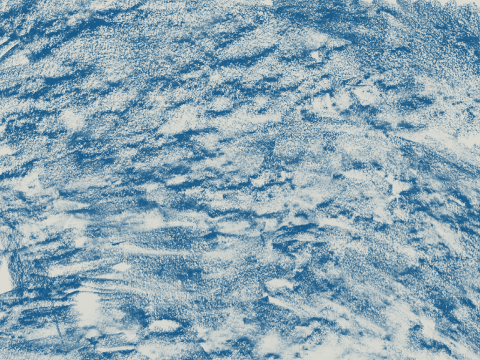
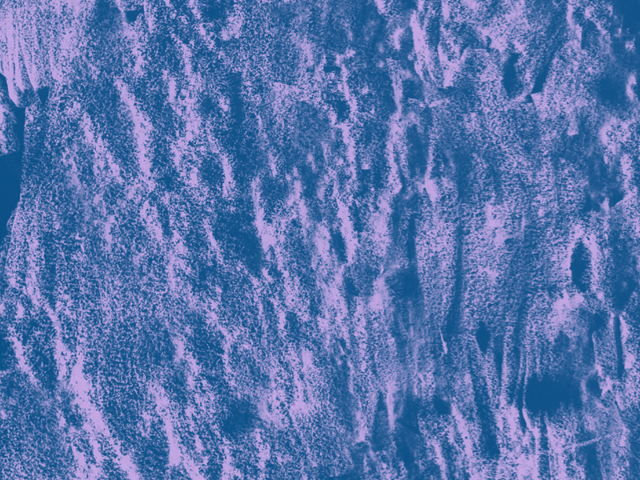
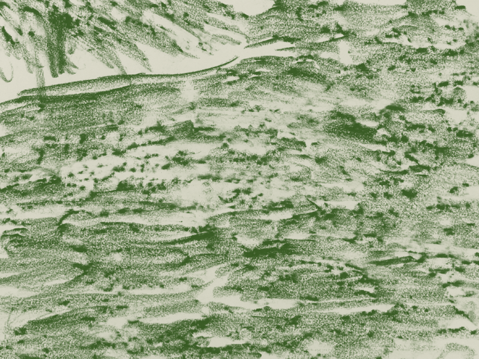
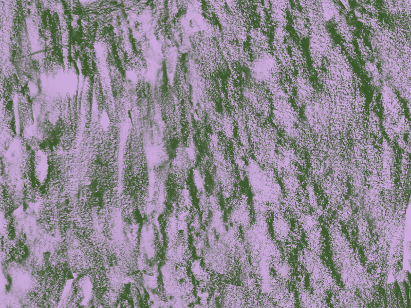
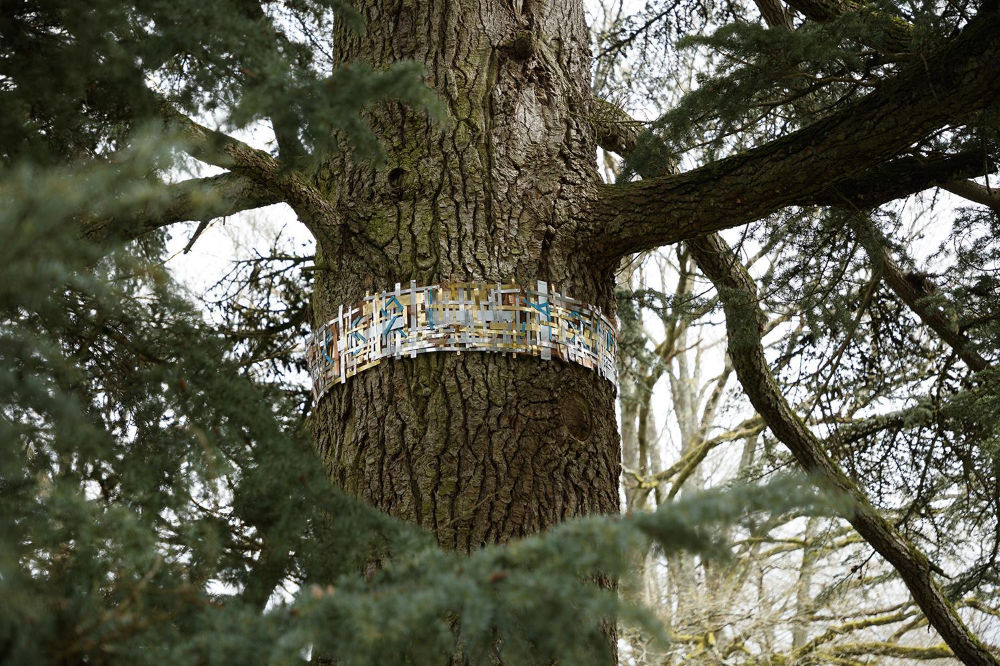
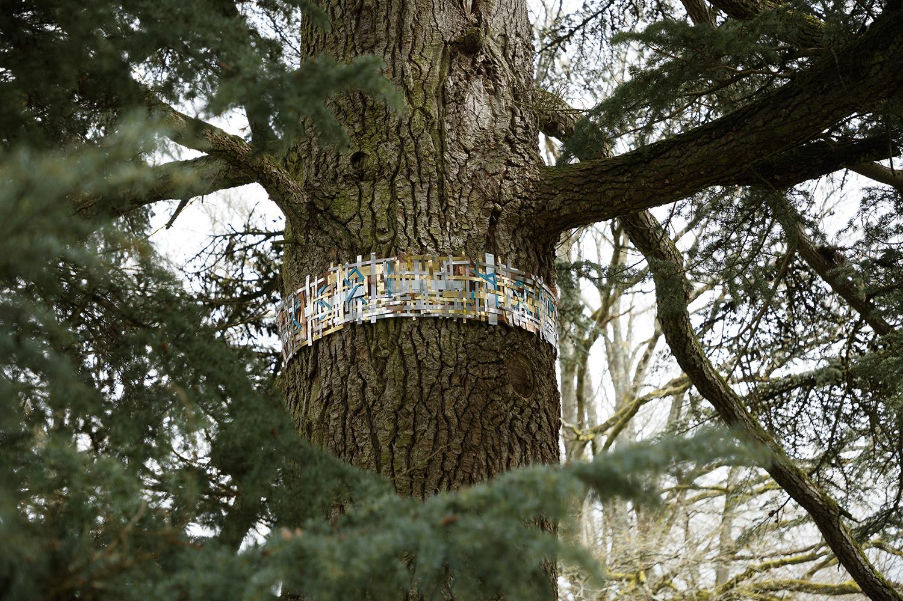
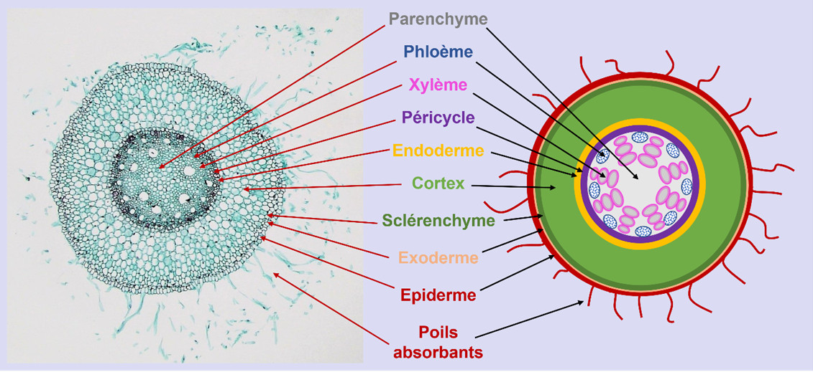

Avant-propos
Bienvenue !
La lecture de ce mémoire repose sur une navigation interactive qui propose deux entrées : un parcours chronologique à partir du sommaire et un parcours iconographique à partir des œuvres citées. Vous pouvez à tout moment changer de parcours et vous laisser aller à la découverte des œuvres, des artistes ou revenir au texte principal. Les mots surlignés attirent votre attention sur les notes dans la colonne de droite. Chaque couleur renvoie à différentes catégories (auteurs, artistes, œuvres, notes, liens externes et crédits). N'hésitez pas à vous aventurer dans tous les coins. Si vous êtes perdu, revenez au sommaire en haut de l'écran qui vous indique dans quelle section vous vous trouvez. Enfin, vous pouvez étirer les colonnes par leurs bords pour plus de confort et changer la taille du texte via l'onglet T.
Résumé
Ce mémoire cherche à répondre à l’urgence de redéfinir nos rapports aux non-humains pour un rapport plus apaisé à notre environnement. En portant son attention sur les arbres, ces recherches s’attachent à changer notre conception de l’arbre, pour le considérer comme l’organisme vivant et individuel qu’il est. Le questionnement de cette perception passe notamment par une étude des interactions de l’arbre avec son environnement, mises ici en perspective pour interroger notre propre manière d’échanger avec les non-humains, avec un intérêt particulier pour les racines, qui incarnent toutes les possibles dimensions d’échanges entre l’arbre et ce qui l’entoure. Ces recherches, ainsi concentrées sur les réseaux créés par les connexions entre les systèmes racinaires des arbres et la manière de les représenter, s’appliquent à répondre à cette question : comment la représentation des réseaux formés entre les systèmes racinaires des arbres peut-elle contribuer à établir un rapport sensible de l’homme à l’arbre ? La réponse apportée dans ce mémoire prend la forme de l’hypothèse d’une représentation heuristique et multidimensionnelle propre aux réseaux racinaires, inspirée par leur structure hybride et leurs interactions dynamiques, pour encourager une nouvelle perception écologique de l'arbre comme une entité intelligente et communicante. Au préalable, cette enquête tente de saisir les enjeux majeurs des interactions racinaires et leur impact sur la structure du réseau ainsi que d’explorer les représentations de ces réseaux et de leurs échanges dans les champs scientifiques et artistiques. Ces recherches abordent l’implication de la pensée en réseaux dans la mise en place d’une telle représentation puis examinent les méthodes de projets artistiques qui questionnent notre rapport au végétal, par des dispositifs immersifs ou interactifs sensoriels impliquant le spectateur ou en dépeignant l’arbre par la diversité de ses interactions. Des méthodologies émergent de ces recherches, plaçant les arbres et le vivant au centre de l’attention et adaptant notre perception à leurs rythmes et dynamiques afin qu’ils deviennent des partenaires dans nos écosystèmes sociaux et émotionnels. Notre étude approfondie des réseaux racinaires démontre en quoi ils sont des modèles d’interaction et comment leurs caractéristiques sont des pistes d’inspirations pour repenser notre rapport au vivant et faire réseau avec lui.
Abstract
This thesis seeks to address the urgent need to redefine our relationship with non-humans for a more harmonious connection to our environment. By focusing on trees, this research aims to change our conception of them, considering them as living, individual organisms. This inquiry proceeds through the study of the interactions between trees and their environment, which are examined here to question our own way of interacting with non-humans, with particular attention to roots, which embody all the possible dimensions of connection between trees and their surroundings. This research, thus focused on the networks created by the links between tree root systems and the way to represent them, strives to answer the question: How can representations of root system networks contribute to establishing a sensitive relationship between humans and trees? The answer proposed in this thesis takes the form of a hypothesis: a heuristic and multidimensional representation specific to root networks, inspired by their hybrid structure and dynamic interactions, aimed at encouraging a new ecological perception of trees as intelligent, communicative entities. Beforehand, this investigation attempts to grasp the main issues of root interactions and their impact on network structure, as well as explore the representation of these networks and their exchanges within scientific and artistic fields. This research explores the implications of network thinking in the development of such a representation, then examines artistic methods that question our relationship to plant life, through immersive or interactive sensory devices or by depicting trees through the diversity of their interactions. Emerging from these studies are methodologies that place trees and other living beings at the center of attention and adapt our perception to their pace and dynamics, so they become partners in our social and emotional ecosystems. Our thorough analysis of root networks demonstrates how they are models of interaction and how their characteristics provide inspiration to reconsider our bond with the living and network with it.
Introduction
Petite, on m’a appris à faire attention à ce qui m’entourait, aux petites bêtes et aux plantes. Je me souviens d’un dessin animé qui abordait des problématiques écologiques à travers des histoires poétiques (Ma petite planète chérie de Jacques-Rémy Girerd, 2010) et d’une histoire en particulier où les enfants du film découvrent que leur parc est démoli pour faire un parking. Tristes, ils discutent avec le vieux chêne, qui, vivant sa dernière nuit avant d’être déraciné, les charge de planter ses glands pour le faire prospérer. L’impact de ce dessin animé n’a sûrement pas été tel au point de déterminer ces recherches, mais il m’a tout de même marqué et a probablement influencé ma sensibilité sur son sujet. Aujourd’hui, au-delà de ce film d’animation, la prévention et la sensibilisation à la préservation du monde végétal est une priorité écologique pressante. En effet, il existe de nombreux rapports comme celui de l’Évaluation des ressources forestières mondiales (FRA) de 2020 de la FAO, nous expliquant que les forêts, qui couvrent 31 % de la surface terrestre mondiale, voient leur surface diminuer dangereusement, particulièrement dans les tropiques avec le cas de la forêt d’Amazonie. « 420 millions d’hectares de forêt ont été déboisés (convertis à d’autres usages des terres) entre 1990 et 2020 ; bien que le taux ait diminué au cours de cette période, la déforestation était encore estimée à 10 millions d’hectares par an entre 2015 et 2020 (environ 0,25 % par an). » Ces relevés nous montrent qu’il est urgent de redéfinir nos rapports avec les non-humains et le vivant. L’actuel phénomène de Plant Blindness ou « Cécité botanique », théorisé par les botanistes James H. Wandersee et Elisabeth E. Schussler, nous amène à constater que la plupart des personnes n’accordent pas une attention particulière aux arbres (et au monde végétal en général). Ils sont perçus, à l’image du vieux chêne, comme une masse faisant partie du paysage. Il est nécessaire de redéfinir notre rapport au vivant pour voir au-delà de cette image superficielle ; un changement de regard s’impose pour percevoir l’arbre non plus comme un objet inerte mais un organisme vivant, un être propre et individuel. En observant la manière dont sont dépeintes nos interactions avec les arbres, on remarque qu’elles sont très différentes en fonction de leur contexte et de notre intention et, en observant les contacts de l’arbre lui-même avec son environnement, on constate chez lui aussi une grande diversité d’échanges. Les recherches qui suivent découlent de ces observations et visent à mettre en perspective les interactions de l’homme avec l’arbre par l’étude de la connexion de l’arbre à son environnement, ce qui va nous amener à l’espace singulier que représentent les forêts. Les forêts sont en réalité un espace de communauté entre vivants, un véritable espace de connexion entre individus. Les échanges y sont discrets et nous semblent insoupçonnés, mais dès lors que l’on s’y intéresse et que l’on creuse sous la surface, on découvre leur richesse. C’est d’ailleurs sous terre que se cristallise cette diversité, sous la forme des racines. Ainsi, mes travaux se concentreront particulièrement sur le système racinaire qui traduit la complexité de l’arbre et des liens qu’il entretient avec ce qui l'entoure. Ils cherchent à explorer différentes dimensions des racines comme outil de perception, de contact, de partage, d’expansion et de connexion avec l’environnement, et questionnent les moyens de représenter l’ensemble des interactions de l’arbre avec son milieu. Ma problématique est ainsi la suivante : comment la représentation des réseaux formés entre les systèmes racinaires des arbres peut-elle contribuer à établir un rapport sensible de l’homme à l’arbre ? Pour tenter de répondre à cette question, mes travaux s’intéressent plus particulièrement aux interactions arbre/homme/environnement, et dont les représentations puisent leurs codes visuels dans différentes disciplines où l’arbre et son système racinaire sont représentés. Dans cet objectif, j’ai commencé par analyser des phénomènes observés dans les échanges entre homme, arbres et racines – par exemple un échange de ressources entre des racines ou un marcheur prenant un bain de forêt – de saisir leur fonctionnement, leurs causes et évolution. La compréhension de ces phénomènes, au-delà de leur observation, passe par leur visualisation, questionnant ainsi leur mode de représentation, leurs codes et leurs enjeux. La seconde partie porte sur l’étude d’un corpus théorique et iconographique illustrant ces différents types d'échanges, tandis que la troisième partie s’attache à restituer l’interdépendance de ces interactions. Cette dernière étape sera ainsi en dialogue avec mon projet plastique articulant plusieurs de ces données pour tenter d’en dresser un portrait complet, non pas exhaustif mais fidèle à la richesse des interactions de l'arbre au reste du vivant (et non-vivant). Il rendra hommage à leur variété et leur complexité, et explorera la rencontre de processus qui ne sont habituellement pas conjugués ensemble. Cette démarche naît d'un intérêt pour le croisement de disciplines plastiques, à l'image des interactions de l'arbre. Mon but est de donner à voir cette richesse dont on se doute mais qui n’est pas visible et de mettre en valeur la dynamique de ces interactions. C’est en menant ce travail d’enquête au sein du mémoire que j’espère pouvoir mettre en avant l’importance et la fragilité de la relation que l’homme entretient avec le milieu végétal et notamment avec l’arbre et la nécessité de préserver son écosystème en apprenant à comprendre son langage.
I – Principes et représentation du réseau racinaire
1 – Structure du réseau racinaire
a – Principes architecturaux
Avant de nous intéresser aux représentations des systèmes racinaires, il nous faut tout d’abord nous pencher sur les principes de croissance définissant leur structure architecturale. Il est important de commencer par comprendre leurs enjeux afin de faire des choix conscients dans leur représentation graphique. Commençons par quelques mots sur la structure des systèmes racinaires. Comme l’explique Marc Brillat-Savarin, ingénieur des Eaux et Forêts ainsi qu’architecte paysagiste, il existe une variété de types d’enracinement mais les arbres se distinguent par trois grandes catégories, déterminées génétiquement. Il peut s'agir d’un enracinement pivotant, constitué d’un axe vertical principal complété par des pivots secondaires et horizontaux, ou d’un enracinement superficiel (ou traçant), avec un pivot peu profond et un système horizontal développé et étendu, ou enfin d’un enracinement en cœur (ou oblique), avec des racines verticales, horizontales et obliques en forme d’étoile. Dans tous les cas, le premier pivot vertical se ramifie en racines horizontales qui permettent d’exploiter le sol environnant. De nouvelles racines verticales poussent de ce système et augmentent ou remplacent progressivement le pivot initial. Dans leur structures racinaires, les végétaux ligneux – dont font partie les arbres – ont deux types de racines : les courtes non ligneuses et les longues ligneuses. Claire Atger, docteure en botanique et spécialiste des systèmes racinaires, décrit les premières comme chevelues, ce qui les spécialise dans l’absorption d’eau et de nutriments. Elles se renouvellent sur un cycle court entre un et trois ans, afin de maintenir une absorption optimale. Les secondes, plus longues, sont définies comme assumant les autres fonctions des racines. Selon la botaniste, elles se divisent en sous-catégories : les racines pérennes qui assurent l’ancrage, explorent le sol et constituent la charpente de l’enracinement, et les racines caduques qui colonisent et exploitent le sol puis s’élaguent alors qu’elles sont sans cesse renouvelées par les extrémités en croissance de la charpente. La croissance des arbres est un processus lent mais constant et leur structure évolue au fil de leurs stades de développement. Au départ, le système racinaire est la première partie qu'une plante développe. Il est constitué des racines séminales qui apparaissent lors de la germination. La croissance des racines part de leur axe souterrain principal – le pivot – et suit quatre étapes de développement. À chaque nouveau stade de l’arbre, le système racinaire suit et change de priorité : lorsque l’arbre n’est qu’une plantule, la fonction première des racines est l’ancrage au sol. Ensuite, la plantule devient un jeune plant et les racines commencent à exploiter le sol. Le jeune plant devient un jeune individu et ses racines commencent à coloniser leur milieu. Enfin l’arbre devient adulte et ses racines peuvent explorer le sol à distance du pied. Les différentes sortes de racines qui forment le système racinaire ne sont pas toujours présentes en même quantité. Leur proportion, ainsi que leur rythme de croissance et de ramification varient beaucoup d'une plante à l'autre. Par ailleurs, chaque racine a une place dans le système déterminée par sa fonction. Comme on peut le voir dans le schéma proposé par les chercheurs Alexandre Grondin, Soazig Guyomarc’h et Laurent Laplaze, chacune se forme en couches concentriques, en commençant par l’épiderme racinaire et les poils absorbants. En contact avec le sol, ces derniers servent à faciliter l'acquisition d'eau et nutriments. Vient ensuite le cortex pouvant contenir des aérenchymes, qui sont des cavités aérifères c'est-à-dire des barrières pariétales pour réguler le passage de l'eau et des nutriments. On trouve ensuite l’endoderme, aussi formé de barrières pariétales puis au centre, un ensemble appelé la stèle, qui contient les tissus vasculaires spécialisés dans les échanges avec les organes aériens. Les vaisseaux de la stèle fonctionnent à la manière des veines et des artères. Ils sont constitués des vaisseaux du xylème, c’est à dire la partie transportant la sève brute (portant eau et minéraux) des racines vers les organes aériens, ainsi que les vaisseaux du phloème qui conduit en sens inverse la sève élaborée (contenant les produits de la photosynthèse) des organes aériens vers les racines. Enfin, la croissance en longueur des racines est possible grâce aux cellules du méristème qui, à proximité de l’extrémité des racines, produisent des couches de liège en périphérie et du bois au centre de la racine. La croissance du méristème est produite par la division de ces cellules, obtenue par l’accumulation d’une hormone végétale : l’auxine. Nous constatons donc que la structure racinaire des arbres est une architecture en constante évolution résultant d’un système interconnecté complexe et parfaitement hiérarchisé, qui s’adapte aux besoins de l’arbre et favorise la croissance des diverses racines, spécialisées pour chaque stade de développement.
b – Repreésentation au sein de différentes disciplines et pratiques
Dans la documentation scientifique, notamment en botanique, les représentations des systèmes racinaires consistent généralement en schémas ou dessins d’observation. Les schémas ont une fonction utilitaire. Ils ont vocation à simplifier l’information et expliciter la structure des systèmes racinaires. Dans un rapport botanique, un schéma permet de visualiser rapidement des informations décrites en plusieurs lignes. Ainsi, en quelques dessins, le développement de la structure devient clair. Les dessins d’observation relèvent d’un même objectif didactique. Que ce soit les croquis de botanistes comme Francis Hallé ou des dessins d’observations comme ceux des Archives de l’Université de Wageningen, leur efficacité dans l’éclaircissement des textes auxquels ils sont liés démontre l’importance de la représentation visuelle de phénomènes biologiques pour comprendre le végétal. Les représentations dans la sphère scientifique arborent un style graphique répondant aux attendus de la discipline, c'est-à-dire rigueur, précision et exactitude de la représentation. Elles témoignent d’une recherche d’objectivité dans la dépiction. Ces représentations relèvent d’une démarche d’archivage du vivant afin d’étudier et comprendre le monde végétal, sa croissance et ses formes. Des représentations de systèmes racinaires très fidèles à la réalité existent aussi dans le champ artistique. C’est le cas des œuvres de l’artiste Giuseppe Licari qui fait appel à des racines d’arbres réelles dans des mises en espace toutefois inversées par rapport à la réalité de manière à mettre en évidence les racines. Cet artiste s’intéresse aux processus métaboliques anthropologiques qui façonnent les paysages contemporains, notamment à la transformation de notre environnement provoquée par la révolution industrielle du siècle dernier. Notre société capitaliste a été construite sur une exploitation intense et constante des ressources naturelles. Elle a laissé derrière elle « une nouvelle couche d'héritage culturel (déchets, mines, pollution, sols épuisés) » que Licari définit comme « l'humus sur lequel les générations futures d'humains et de non-humains devront vivre ». Cet humus est le sujet principal de sa pratique et donne son titre à l’installation qui nous intéresse ici. À l’origine, l’humus désigne la première couche du sol, la partie la plus riche et primordiale pour les arbres. Ici cependant les racines sont dénuées de leur précieuse terre. Dépourvues de toute perspective de croissance, elles sont mortes, comme une image de l'état de nombreuses forêts, agonisant par la détérioration de leur sol. Au-delà de l'exposition de l'objet biologique, les racines acquièrent un nouveau statut possédant une portée symbolique par leur mise en espace. L'artiste souligne ici l'impact de la relation de l'homme sur la nature et le potentiel qui réside dans la conception que l'on en a et de celle que l'on voudrait voir. Toujours dans une optique de dialogue, les œuvres de Licari se développent en collaboration avec des géologues, avocats ou botanistes, spécialisés dans le champ concerné par ses projets. Cela explique que l’on retrouve un objectif partagé avec la science de montrer et faire comprendre le végétal jusque dans ses parties les plus cachées. Son approche est cependant moins pédagogique que sensorielle. L’artiste cherche à donner à voir l’invisible et y confronter le visiteur, pour créer un dialogue entre l’homme et la nature. Cette installation ne peut pas se rapprocher plus du réel à ceci près que chaque arbre et système racinaire y sont observés hors de leur milieu et ainsi complètement isolés du reste du végétal. Les racines y sont figées, hors de leur sol, sans perspectives de croissance possible. Sont exposées leur structure et leur architecture mais est en même temps dissimulé tout processus dynamique. Or, même si elle nous semble fixe, l’occupation de l’espace par l’arbre est un enjeu stratégique de son développement et ce dernier est un processus qui suit une logique d’adaptabilité. Le rapport des arbres à leur environnement est dynamique. En restant toute leur vie à la même place, ils doivent trouver le moyen de puiser suffisamment de ressources tout en faisant face aux dangers qui surviennent, ce qui demande une analyse rigoureuse et complète de leur environnement ainsi que le développement de stratagèmes d’optimisation et de transformation de leur milieu. Comme nous l’avons vu plus tôt, chaque racine se spécialise en fonction de son emplacement dans le système. Cela signifie aussi que l’aspect des racines dépend de leur tâche au sein du système et qu’au fil de la croissance de ce dernier, la structure du réseau s’adapte aux besoins de l’arbre. Ce constat correspond aux principes de la théorie des graphes selon laquelle les réseaux sont des structures en constante évolution. Dans son article « The structure and function of complex networks », M. E. J. Newman tient un compte-rendu de l’évolution de la recherche sur les systèmes complexes dans la théorie des graphes. Il partage les enjeux derrière cette discipline notamment pour une meilleure compréhension des systèmes dans le but de prédire le développement des réseaux. Ce texte distingue différents types de réseaux et présente leur structure. Il donne les composants clé à étudier pour analyser un réseau, c'est-à-dire lesquels sont les plus importants à développer, protéger ou supprimer dans des situations réelles. Il définit ainsi les réseaux comme des structures en constant changement dont l’évolution et la structure dépendent des éléments qui les composent. Cette influence est mutuelle, ainsi la variation d’un paramètre change la structure du réseau vers une nouvelle forme, qui elle-même impacte la disposition d’un autre paramètre, qui à son tour se développe et modifie la structure générale, et ainsi de suite. Les réseaux réels se développent toujours en fonction de leur contexte, ainsi prendre en compte la nature du réseau étudié permet d’expliquer son fonctionnement et les interactions à l’intérieur de sa structure. Ainsi, selon la théorie des graphes, les réseaux formés par les systèmes racinaires des arbres sont des réseaux de nature multiple. Les comportements des racines couvrent différents champs d’action (fonctions sociales, gestion de ressources, partage d’informations..) correspondant tout autant à des réseaux sociaux que biologiques. En plus du caractère dynamique des systèmes racinaires lié à leur constante évolution, on retrouve dans la mise en réseau des arbres plusieurs phénomènes et paramètres centraux de l’étude des réseaux. Par exemple, la résilience des réseaux, qui fait référence à leur capacité à maintenir leur fonctionnalité malgré la suppression de certains de leurs nœuds est une notion très importante dans le cadre de la gestion des arbres. Dans un milieu à l’équilibre sensible comme les forêts primaires, la suppression d’un nœud très connecté aurait un effet dévastateur. Un autre exemple est l’assortiment des réseaux. Ce paramètre fait référence à la manière dont les différents types de nœuds se connectent entre eux et à la tendance des nœuds similaires à se connecter entre eux, la probabilité de connexion entre les nœuds dépendant souvent de leurs types. Dans les réseaux sociaux, ce genre de liaison sélective est appelé mélange assortatif ou homophilie, et peut être quantifié par un « coefficient d'assortativité », qui mesure la probabilité de connexion entre les nœuds similaires. On peut aisément dresser un parallèle avec les collaborations d’arbres en fonction de leur compatibilité d’essence ou parenté. Une caractéristique majeure du réseau est l’interconnexion des éléments qui le composent. Comme nous l’avons vu, en appliquant les analyses de la théorie des graphes, les réseaux racinaires semblent être de nature multiple, soulignant leur complexité et « complétude ». Nous pouvons ainsi avancer qu'il n’est pas évident ni nécessaire de les classer dans des catégories figées de réseaux. Puisqu’il est difficile de dissocier la nature du réseau de la nature des connexions des nœuds qui le composent, il est en revanche utile de s’attarder sur ses interactions, qui dépendent et impactent la structure de leur système.
2 – Fonctions du réseau racinaire
Nous allons aborder ici les différentes fonctions du réseau par le prisme des types d’interactions qui leurs sont inhérentes, c'est-à-dire étudier le type de dynamiques ou d'échanges qu'elles engendrent entre les acteurs du réseau. Cette mise en perspective vise à considérer l’ensemble de manière dynamique. Comme nous l’avons vu plus tôt, les racines assurent diverses fonctions répondant aux différents besoins de l’arbre. Tout d’abord, elles permettent l'ancrage dans le sol. Elles empêchent l'arbre de s'enfoncer sous son poids tout en gardant son équilibre face aux contraintes extérieures. Elles assurent aussi la production d'hormones de croissance (cytokine) vers le liber – la partie du tronc où circule la sève – en retour de sève nourricière (portant des hormones auxines) de la partie aérienne. Ces échanges de sèves assurent la croissance de l’arbre mais servent aussi à faire face à des difficultés et d’éventuels accidents, en accordant notamment à l’arbre une formidable capacité d’enveloppement. Les arbres sont d’ailleurs capables de cicatriser en cas de blessure exposant le bois mort. Dans ce cas, le bois vivant le recouvre, ce qui permet de sauver l’arbre de l'humidité et de la décomposition. On retrouve d’autres cas d’enveloppement notamment pour se débarrasser d’obstacles inertes et éviter les frottements. Les racines peuvent ainsi envelopper des pierres pour mieux solidifier l'appui dans le sol. Si des racines sont en contact avec d’autres racines pendant leur croissance, elles se connectent et se soudent, directement s’il s’agit d’une même espèce ou en passant par des intermédiaires comme des champignons (comme nous le verrons par la suite) dans le cas d’espèces différentes. La connexion est naturelle et spontanée, ainsi ces soudures peuvent créer de véritables réseaux souterrains reliant de nombreux arbres sur une grande surface.
a – Principes architecturaux
Dimension sociale et coopérative
Les recherches sur le sujet, comme les travaux de la botaniste Suzanne Simard qui a consacré sa carrière à la communication entre plantes, parlent de communauté forestière, ce qui n’est pas anodin. Les arbres s’entraident, et même si cette collaboration consiste surtout en un échange de bons procédés – ce qui a questionné des chercheurs sur les intentions des plantes, mais nous aborderons ce point plus tard – elle est bénéfique pour tous. Les arbres sont même capables de sacrifice si c’est pour le bien commun. Par exemple, si les racines soudées proviennent de plans, les moins efficaces peuvent faire mourir leur partie hors-sol et se mettre alors à ne pousser qu'en racines pour favoriser la croissance des plants les plus efficaces. Cela allège la compétition et dégage de la place pour la croissance des branches. De la même manière, il est possible qu’un arbre voisin et de même espèce qu’une souche coupée l’alimente en énergie par les racines pour qu'elle se cicatrise et survive. C’est un échange équitable puisque l’arbre pourra lui-même profiter de son système racinaire. Les systèmes racinaires répondent ainsi à une dimension sociale et coopérative des arbres, soulignant l’importance de l’interconnexion entre les plantes. Cette conception s’inspire du système de réaction-diffusion, un modèle mathématique utilisé pour simuler le principe de répartition des substances chimiques dans un espace en fonction de réactions chimiques et de leur tendance à se disperser naturellement. Il est utilisé ici pour créer des formes et des motifs qui semblent vivants ou naturels. L'algorithme calcule une forme radiale pour l'installation, qui semble se fondre de manière naturelle dans le paysage environnant. La forme organique qui s'étend à partir du centre crée une connectivité spatiale et un espace de communauté qui estompe la frontière entre l'installation artificielle et l'environnement naturel. Les comportements collaboratifs entre les membres d’une communauté forestière se retrouvent particulièrement accrus par les réseaux mycorhiziens. Les mycorhizes se trouvent généralement dans les cinquante premiers centimètres du sol, constituant entre un tiers et la moitié de la biomasse du sol. Résultat d’une symbiose entre les racines de plantes et les champignons, ces tissus forment des réseaux sociaux souterrains permettant de relier les arbres entre eux. Les arbres peuvent s’associer d’une dizaine à plus d’une centaine de champignons et les champignons peuvent s’associer jusqu’à plus d’une dizaine d’arbres, reliant une grande partie du couvert forestier, même si chaque espèce a ses préférences dans le choix des individus avec lesquels s’associer. La mycorhization est donc un processus qui permet aux plantes de coopérer et de s'entraider par le partage d’informations et de ressources. Les réseaux mycorhiziens permettent en effet une communication intra et interspécifique entre les plantes en permettant notamment le transfert de nutriments, d'eau et de signaux biochimiques. Ils envahissent le sol dans toutes les directions, permettant de nourrir toutes les plantes et redistribuer les ressources dans les parties plus pauvres. L’étendue et le fonctionnement de ces réseaux peuvent être étudiés par différentes techniques comme le séquençage de l'ADN, le traçage isotopique et l'imagerie des racines. Des expériences de traçage isotopique dans les forêts subtropicales du nord du Pakistan ont permis d’observer que la pousse des jeunes plantes est favorisée par des transferts de nutriments comme le carbone, l'azote et le phosphore, des arbres matures par ces réseaux. Des procédures d’étiquetage stable des isotopes du carbone ont ainsi permis de démontrer des échanges de carbone entre les plantes, qui comptent, chez les arbres, de 10% à 40% du carbone stocké dans leurs racines. Le transfert de ressources est favorisé par les mycorhizes par un échange réciproque d'eau et de nutriment collectés par le champignon contre des sucres issus de la photosynthèse de la plante. Ce partage peut continuer et même rester conséquent avec un arbre mort. Le partage et l’entraide entre les arbres via ces réseaux semblent spontanés et généreux et pourtant l’étude des réseaux mycorhiziens initiée par les travaux de Simard a suscité un débat en biologie : la coopération est-elle aussi centrale que la compétition dans l'évolution selon Darwin, qui voyait l’ordre social et les aptitudes individuelles découler de la rivalité entre des individus égoïstes ? Le naturaliste reconnaissait que l’on peut observer des comportements altruistes dans des groupes sociaux, mais qu’ils sont souvent expliqués par un lien de parenté. Ainsi le sacrifice d’un individu pour sa descendance s’explique par la diffusion de ses gênes. On retrouve ce favoritisme chez les plantes dans les réseaux mycorhiziens, où l’on observe une meilleure nutrition foliaire chez les individus apparentés. Ainsi, les « arbres mères » favorisent la survie des plantules en leur transmettant des nutriments via ces réseaux. Conformément aux théories de la compétition « égoïste », certains chercheurs suspectent que cet altruisme des arbres provient en fait d’une manipulation des champignons. Cette relation de réciprocité et d'exploitation avec les autres découle de leurs propres besoins et motivations. Malgré ces débats sur le prétendu égoïsme des végétaux, l'impact des mycorhizes est le même : les arbres peuvent nourrir, informer ou aider d'autres arbres. Ainsi, les études comme celles de Simard permettent dorénavant de percevoir les arbres comme des coopérants plutôt que des concurrents et de considérer les forêts anciennes comme des sociétés complexes et interconnectées. Grâce à ces réseaux, les plantes s’associent et coopèrent pour favoriser la survie des individus apparentés et promouvoir le développement de la communauté végétale, ce qui remet en question l'individualisme et la compétition comme moteur principal de l'évolution.
Dimension protectrice et défensive
Les expériences de traçages de carbone ont démontré que les chances de survie des jeunes plants augmentent significativement au contact des réseaux mycorhiziens grâce au partage des nutriments. Cependant la communication au sein de ces réseaux ne se limite pas au transfert de ressources. Il s’agit aussi de signaux d’alarme chimiques pour avertir d’un danger et déclencher des réponses de défense chez les plantes environnantes contre d’éventuelles attaques de prédateurs tels que des ravageurs ou des parasites. Dans cette situation, les arbres mères peuvent aussi augmenter leur transfert de carbone afin de contribuer à cet effort de protection de la communauté forestière. De la même manière, les réseaux fongiques rendent les plantes plus résistantes à la sécheresse, à la salinité et aux métaux lourds. Grâce à l’interconnectivité des réseaux mycorhiziens, les forêts ont une grande capacité d'autorégénération. Ces systèmes complexes rendent les forêts plus résilientes en favorisant une diversité des gènes et des espèces. En permettant une cohésion des sols et en favorisant la croissance et la survie des espèces, les réseaux apparaissent ainsi comme un système de communication souterrain fondamental au cœur du vivant, jouant un rôle central dans le maintien de la diversité des forêts et leur capacité à s’adapter et à survivre. Cette installation interactive et immersive repose sur l’association d’éléments sculpturaux à des circuits électroniques. Les visiteurs sont invités à appuyer sur des capteurs pour déclencher des circuits lumineux et les modules sonores associés, activés par la lumière. L’installation fait référence au mycélium, la structure en filaments des champignons formant les mycorhizes. L’artiste dresse ici un parallèle entre les réseaux de communication contemporains et ceux des mycorhizes sous le sol de la forêt. Elle représente le mouvement organique de ces réseaux, en évoquant les signaux biochimiques transmis à l’intérieur du réseau mycorhizien, mais aussi la fluctuation des courants dans un circuit électrique. Elle donne à voir et entendre des réseaux discrets par une incarnation non naturelle, matérialisant le parallèle avec les réseaux électriques. Cette matérialisation montre d’ailleurs que ces réseaux naturels sont beaucoup moins centralisés et plus équilibrés que les réseaux physiques développés par les humains comme internet. Leur structure non hiérarchisée est mise en évidence par la manière dont est illustrée la diffusion de signaux biochimiques dans l'œuvre, à travers le rythme d’activation des éclairages, qui s’allume un par un à la manière d’un signal qui se propage. L’invitation du public à faire partie du réseau traduit le souhait de l’artiste à rendre physique cet engagement dans une relation inter-espèce avec les champignons. Cette participation à ce réseau interroge la place de l’humain dans le monde végétal. En reliant les arbres à tout un monde d’échange végétal, les racines permettent aux arbres de maintenir une vie sociale dans leur milieu, d’envoyer et recevoir aussi bien des informations que des ressources, améliorant leur survie, surtout dans les moments les plus difficiles. Cependant les arbres sont aussi capables de se débrouiller seuls car leurs racines sont équipées pour optimiser la captation des ressources du sol, qui est une de leurs fonctions primordiales.
b – Réseau de ressources
Dimension nourricière
L’une des tâches primordiales des racines porte sur l’exploration des différentes couches du sol pour en exploiter les ressources comme l’eau et les minéraux, qui peuvent être ensuite absorbées par les radicelles. Elles possèdent d’importantes capacités d’absorption et de conduction d’eau, notamment les racines les plus profondes. Elles assurent à ce titre une fonction de stockage des ressources entre deux saisons de photosynthèse. Le système racinaire est aussi en capacité de mobiliser des microorganismes pour mieux assimiler ou accéder à des nutriments. Les racines sécrètent des molécules qui stimulent la germination de spores de champignons mycorhiziens. Peut ensuite se développer la symbiose avec ces derniers que nous avons abordé plus haut, la mycorhization.
Dimension écologique
Cette prospection des racines profite aussi au sol. En effet, l’interaction des racines avec le sol et ses communautés microbiennes impacte la composition de la zone au contact des racines. Elles y relâchent des molécules – selon un processus appelé exsudation racinaire – qui viennent impacter la composition du sol et les micro-organismes présents en laissant comme une signature de l’arbre, appelé « effet rhizosphère ». Cette exsudation contribue à l’enrichissement du sol et le rend plus favorable à l’acquisition de l’eau et aux échanges avec les autres organismes. Nous avons vu que les réseaux racinaires jouent également un rôle important dans le stockage du carbone. Les réseaux mycorhiziens en particulier améliorent grandement la capacité naturelle des plantes à stocker le CO2 dans le sol. Ainsi les forêts mais aussi les tourbières, prairies et autres environnements jouissant de tels réseaux souterrains sont de véritables puits de carbone dont la préservation est stratégique pour lutter contre le réchauffement climatique, comme le démontre le rapport de la Société d'Histoire Naturelle du Pays de Montbéliard « De l’importance vitale des mycorhizes dans la lutte contre le réchauffement climatique » rédigé par Daniel Sugny et Jean-Jacques Sanglier. Grâce à des études spécifiques, la capacité d’absorption des écosystèmes pourvus de symbioses mycorhiziennes a pu être évaluée à trois-cent-cinquante gigatonnes de carbone à l’échelle mondiale, contre vingt-neuf gigatonnes pour les autres types de végétation. Mais ces études ont aussi montré que « l'activité humaine (urbanisation, agriculture, constructions d'infrastructures, etc.), a considérablement endommagé ces écosystèmes ». La déforestation massive depuis les derniers siècles impacte directement ces riches réseaux racinaires et fongiques. Simard rappelle que le déboisement touche 40 % des terres aux États-Unis et 80 % au Canada, augmente les risques d'inondations et de glissements de terrain, provoque la dégradation des sols, libère du carbone et contribue à la pollution des cours d'eau. Les forêts exploitées sont remplacées par des plantations uniformes, dépourvues des réseaux mycorhiziens et d'autres organismes des forêts anciennes, privant les arbres d’une protection importante contre les maladies, les rendant ainsi plus susceptibles de mourir. En parallèle, les réseaux mycorhiziens se développent beaucoup mieux dans des forêts diversifiées que dans des monocultures. La chercheuse affirme que préserver quelques « arbres mères », dotés de réseaux mycorhiziens solides et variés, améliorera significativement la santé et la survie des semis futurs, qu'ils soient plantés par des forestiers ou qu'ils germent naturellement. Au final, les forêts sont essentielles à la vie sur Terre, car elles fournissent de la nourriture, des matériaux de construction et régulent le climat. Elles ont joué un rôle clé dans la création d'une atmosphère riche en oxygène et capturent chaque année plus de 24% des émissions mondiales de carbone et en stockent entre quatre-cent et mille-deux-cent gigatonnes, principalement dans le sol. Pour le moment, les différentes stratégies de protection de l’environnement des mycorhizes se concentrent sur les écosystèmes hors sol ce qui est, selon le rapport de Sugny et Sanglier, « très dommageable car la destruction des réseaux fongiques accélère le changement climatique et la perte de biodiversité en perturbant les cycles vitaux des nutriments dans le monde ». Ce rapport estime d’ailleurs que plus de 90 % des sols de la Terre seront dégradés d’ici 2050. Ainsi, afin de limiter la dégradation des sols, il est essentiel de comprendre les dynamiques de colonisation et d’exploitation du sol auxquelles participent les racines. Étudier les modes d’occupation et d’adaptation des espèces au sol permet d’identifier des pratiques de gestion plus durables et respectueuses des écosystèmes souterrains. En effet, on ignore souvent leurs stratégies d’occupation et on sous-estime leur capacités d’adaptation, qui sont pourtant un moyen naturel de maintenir l’équilibre écologique et de contribuer à la résilience des écosystèmes.
c – Réseau d'exploration et d'expansion
Dimension exploratoire et adaptative
Les différentes stratégies d’occupation du sol sont très variées entre les espèces, favorisant différentes manières de s’étendre et d’exploiter le sol, fournissant ainsi de nouvelles ramifications qui viennent augmenter la plasticité des réseaux. Par exemple, comme nous explique Claire Atger dans l’article précédemment cité, la fourchaison favorise une forte expansion du système racinaire par la codominance d’axes. Elle permet une meilleure exploration en éloignant le volume absorbant de la base du tronc (le collet) et une conduction beaucoup plus élevée. À l’opposé, avec le développement de rejets, plusieurs racines peuvent naître au même point. Cette méthode est moins hiérarchisée mais elle maintient l’absorption des racines dans un volume restreint, optimisant l’exploitation de l’espace. Une tactique répandue est une opération conjointe de fourchaison et de rejets en superposition de plusieurs couronnes racinaires qui peuvent fusionner en socle. Cependant, ces stratégies sont déterminées génétiquement, ainsi certaines espèces optent pour le gigantisme, ne formant ni fourches ni rejet. Ces stratégies déterminent également les interactions entre les végétaux, en fonction notamment de la forme de leur système racinaire, qui favorise l'entraide ou la compétition. Néanmoins, même si la croissance du système racinaire est très hiérarchisée et suit un modèle architectural, ces systèmes restent théoriques et évoluent en fonction du terrain. Ainsi même si cette croissance suit une stratégie spécifique, elle n'est pas prévisible. Le développement racinaire est un processus dynamique qui dépend de beaucoup de facteurs et qui s'adapte à son milieu. Sa croissance peut ne pas être homogène en fonction du contexte de l'arbre, de ses contraintes et l’amener à adopter un comportement opportuniste, c’est-à-dire diriger ses racines vers les points d'intérêt. On estime qu’en forêt, 80% du volume des racines restent en surface peu profonde – aux alentours de cinquante centimètres, mais en fonction des besoins de l’arbre, l’extension maximum du réseau racinaire peut monter à un rayon de quatre-vingt-dix mètres à l’horizontal pour la forêt tropicale et de soixante mètres à la verticale dans le désert. Les plantes ont donc une plasticité racinaire qui leur permet de s’adapter en fonction de ce qu’elles perçoivent de leur environnement. Par exemple, si de l’acide abscissique (hormone de réponse au stress hydrique), s’accumule dans une zone sèche du sol, la plante va réprimer la formation de ses racines latérales. Au final, comme le rappelle Marc Brillat-Savarin, nous voyons que l’arbre trouve toujours le moyen de s’adapter grâce à cette plasticité. Ainsi en milieu urbain les racines ont tendance à se diriger vers une source d'eau, ou encore, face à des vents forts, l'arbre développe davantage ses racines du côté du vent pour s'ancrer. Ses motifs s’inspirent du monde naturel et botanique en reprenant des structures géométriques des cellules, des flocons de neige ou des coquillages. En combinant design et science, l’artiste évoque l’équilibre écologique actuel entre l’homme et la nature. Elle reprend les principes géométriques et d'ordonnancement de la nature pour nous livrer une représentation poétique du désir humain de contrôler la nature. À travers sa pratique, l’artiste révèle non seulement la vitalité des plantes, mais aussi leur incroyable capacité d’adaptation. Elle l’explique ainsi :
Sa démarche pose ainsi un dilemme, car son travail est à la fois une manipulation des processus naturels tout en offrant la possibilité de cultiver ensemble un chemin commun.
II – Formes de repreésentations plus libres : question de la mise en forme des donneées
1 – Penser notre manière de représenter les réseaux racinaires
Depuis les plus anciennes cultures et religions, l’arbre, avec sa structure en bifurcations, son système de ramures et son feuillage protecteur, a toujours accompagné les hommes, représentant à la fois la prospérité, la fertilité, la force, le lien entre ciel, terre et monde souterrain et la connaissance. Il leur a ainsi fourni une image symbolique de la vie, de l'univers, et de la connexion divine, comme l'Arbre de vie, que l’on retrouve dans les cultures monothéistes ou païennes, et qui incarne l'idée que toute vie est interconnectée et sacrée. Apparaissant en même temps que l'arbre de la vie dans la Genèse, l'arbre de la connaissance du bien et du mal illustre une utilisation fondamentale du symbolisme de l'arbre pour marquer la distinction et la compréhension du savoir. Il figure parmi les utilisations fondamentales de la division des racines et des branches pour symboliser la divergence de concepts. L'influence que porte l'arbre de la connaissance au fil des siècles souligne la puissance symbolique de l'arbre ainsi que le lien fort qu'il tisse entre la croyance religieuse et la classification des savoirs. La classification s'opère ici par les branches et les racines. Les premières, au nombre de seize, présentent les grands domaines de la science que l'on peut lire sur les étiquettes enroulées autour des branches, et qui ont chacune un arbre dédié. Les dix-huits racines regroupent quant à elles en deux groupes, les neuf attributs divins (bonté, grandeur, éternité, puissance, sagesse, volonté, vertu, vérité et gloire) et neuf principes logiques (différence, concorde, contrariété, commencement, milieu, fin, majorité, égalité et minorité). Réalisé quelques siècles après la mort de Lull, il existe diverses variations de la représentation de cet arbre. Le chercheur et designer Manuel Lima a consacré la majeure partie de ses travaux à la visualisation de l’information, notamment par l’étude des modèles de classification. En intégrant la symbolique de l’arbre comme modèle de classification du monde dans un ouvrage intitulé Visual Complexity: Mapping Patterns of Information, il explique comment l’arbre a pu très tôt exprimer la diversité (par analogie avec ses branches) à partir d’une unité centrale (son tronc). On peut retenir de son étude deux principaux usages de l’arbre comme modèle épistémologique, le premier en généalogie, permettant d’illustrer la croissance et la subdivision des idées, des sujets, des personnes et des sociétés dans le temps, et le second en classification, créant une taxonomie systématique ordonnée et régulière des valeurs et sous-valeurs. Le premier exemple abordé par Lima dans la classification d’information est celui de l’organisation hiérarchique des connaissances proposée par Aristote dans Catégories. Basée sur dix catégories fondamentales regroupant des espèces subordonnées, cette organisation définit ainsi un modèle de classification en couches qui a servi durablement de modèle dans la philosophie occidentale. Les prédicables d'Aristote sont reformulés par le philosophe Porphyre dans son introduction à Categories d'Aristote (ou Isagogè), en cinq classes : genre, espèce, différence, propriété, et accident. Il introduit une structure hiérarchique de classification, connue sous le nom d’« arbre de Porphyre ». Le Liber figurarum, œuvre théologique symbolique de Joachim de Flore incarne une utilisation marquante de l’arbre dans la représentation et l’organisation des connaissances. Il s’agit d’une collection d'illustrations et de traités théologiques publiée après sa mort en 1202. Il représente un effort de systématisation des récits historiques, des événements et des relations sociales à travers la métaphore de l'arbre. Rappelons aussi ici l’Arbor scientiae de Ramon Llull précédemment cité qui organise les savoirs humains dans un arbre de la science, où chaque domaine est classifié dans un arbre dédié. Llull dresse ainsi un inventaire dans lequel il distingue les connaissances profanes (comme la physique et la politique) et religieuses (comme la théologie et l’astronomie), illustrant sa vision d’un savoir universel et interdépendant. Deux arbres additionnels servent d’outils pédagogiques, avec des exemples et des raisonnements clarifiant les concepts. Cette approche a influencé des penseurs comme Francis Bacon, René Descartes, et plus tard Gottfried Leibniz, contribuant ainsi aux fondements de la pensée scientifique et de l’informatique moderne. La volonté de rassembler l’intégralité des connaissances humaines dans un compendium est qualifiée d’encyclopédisme. Elle sera marquée par des œuvres monumentales comme la Naturalis Historia de Pline l’Ancien, une encyclopédie en trente-sept livres traitant des aspects du monde naturel et des réalisations humaines en art, architecture et médecine, ou l’ Etymologiae de Saint Isidore de Séville, qui organise une monumentale archéologie des savoirs comptant une vingtaine de livres puisant aux sources des auteurs antiques, ou plus tard au XIIIᵉ siècle, des ouvrages tels que De Proprietatibus Rerum de Bartholomeus Anglicus et le Speculum Majus de Vincent de Beauvais qui poursuivent cet effort d’organisation des connaissances médiévales. Ces ouvrages ouvrent la voie à l'Encyclopédie de Diderot et d’Alembert, comptant plus de soixante-dix-mille articles et environ trois-mille illustrations dans trente-cinq volumes. Diderot imagine alors l’encyclopédie comme un outil permettant de relier différentes sciences et d'encourager les lecteurs à explorer ces connexions, comme un organisme vivant et dynamique, favorisant l’expansion des connaissances et la création de nouvelles œuvres. Le modèle de l’arbre reste aujourd’hui omniprésent dans la sémantique de l’organisation des données et demeure essentiel pour représenter les structures hiérarchiques. Cependant désormais, l’utilisation des diagrammes d'arbres se limite à des outils utilitaires, principalement étudiés en informatique et en théorie des graphes. Avec le développement de nos sociétés accompagné d’une complexité grandissante de l’information, les modèles en arborescence se sont avérés limités pour leur visualisation. S’ajoute à ce problème pratique des critiques d’ordre symbolique. En effet, comme l’explique Lima, des connotations négatives ont été attribuées à ces modèles perçus comme des figures rigides, centralisées et descendantes. Les structures arborescentes ont été associées au centralisme, exprimant une concentration des pouvoirs, ou à un système où la communication passe par un centre contrôlé. Cette critique les ont ainsi rapproché des modèles extrêmes tels que des systèmes hiérarchiques oppressifs, comme le totalitarisme, l'autoritarisme et l'absolutisme. Est né en opposition à ces modèles, dans une nécessité de trouver une alternative plus flexible, le concept des rhizomes, une structure décentralisée favorisant les interconnexions et multiplicités. La pensée en rhizome est le fruit de la collaboration entre Gilles Deleuze, philosophe, historien et théoricien de l’art, et Félix Guattari, psychanalyste et philosophe. Dans leur ouvrage Mille Plateaux : Capitalisme et schizophrénie, véritable plaidoyer pour le rhizome, ils exposent ses grands principes et ses potentialités. Le rhizome est un modèle de croissance, une implantation des plantes dans le sol différente de la pousse des racines. Non hiérarchisé, plus ouvert et diversifié, il est présenté ici comme alternative au modèle classique de l’arborescence. En comparant les deux modèles, les auteurs dressent les différents problèmes de la pensée en arborescence, qui est, selon eux, réductrice de par sa structure. Ce modèle tend à réduire les idées à des dualismes et privilégier une approche binaire. Il a tendance à chercher à tout hiérarchiser, à chercher un centre. Or, en suivant une structure rigide, on perd le dynamisme des idées, on fige les choses plutôt que de représenter leur évolution constante. Ce modèle arborescent suit selon eux une culture occidentale autocentrée qui ne s’ouvre pas aux perspectives autres, ce qui n’encourage pas à confronter les points de vue et fait perdre en richesse au débat. En opposition, la pensée en rhizome est horizontale, elle favorise l’ouverture, la multiplicité et la diversité. Les idées sont ainsi moins organisées mais leur connexion les enrichit et permet de transmettre leur complexité. Le rhizome est aussi plus flexible, permettant de représenter des situations en constante évolution sans perturber l’ensemble. Toutes les possibilités de connexions entre les idées offrent autant de nouvelles perspectives, remettant perpétuellement en question toutes les idées formulées. Enfin, cette pensée est ouverte et permet de s’adapter à de nombreux contextes, favorisant davantage les interactions aux structures. En critiquant la pensée en arborescence, Mille Plateaux met en exergue les caractéristiques majeures de cette dernière. Il met notamment en avant qu’elle est profondément hiérarchique, organisée et se développe depuis un centre, ou un point d’origine qui suggère un sens de lecture unique. Le rhizome étant basé sur le réseau, il est intéressant de confronter les systèmes racinaires à ce fonctionnement. On observe que certaines de leurs caractéristiques respectives peuvent se raccorder mais la nature très hiérarchisée des racines les empêchent de devenir rhizome. Leur nature même les fige dans le sol, ainsi même si elles sont dynamiques et capables de s’adapter, elles ne sont pas modelables et re-définissables en permanence. Quelques-unes de leurs caractéristiques sont tout de même similaires au rhizome. Le rhizome est un tissu de lignes connectées, ce qui est aussi le concept des systèmes racinaires et malgré le respect d’une hiérarchie des axes racinaires, le contrôle exercé par ces lignes au sein du système n’est pas nécessairement uniforme. Le point crucial d’un réseau est le point de rencontre entre ses composants, ainsi cela peut expliquer que le rhizome ne soit qu’un « milieu » sans début ni fin, comme le suggèrent les auteurs de Mille Plateaux. Il n’a pas de point d’origine et son intérêt même est de croiser tout ce dont il est fait. L’horizontalité du rhizome fait écho dans une certaine mesure aux échanges de bons procédés des systèmes racinaires qui, parce que chaque membre du système n’a pas accès et n’apporte pas les mêmes ressources, les mettent tous sur un même pied d’égalité dans leur échange. Ils sont interdépendants et c’est cette connexion qui donne sa raison d’être au système, tout comme le rhizome prend son sens dans la connexion entre les dimensions dont il est fait. Le système racinaire rejoint donc différents points d’origine (le tronc des arbres) entre eux. Le développement de chacun de ces systèmes racinaires suit une structure hiérarchique classique. Pourrait-on cependant avancer qu’à partir du moment où naît le réseau, c'est-à-dire où les racines de différents arbres se rejoignent, on peut considérer l’ensemble comme rhizomique ? Le système racinaire seul suivrait ainsi un fonctionnement en arborescence, jusqu’à sa mise en relation avec d’autres. Alors, il deviendrait un nœud parmi ce plus large réseau, où le contrôle serait équilibré parmi les composants. Cette structure potentielle hybride souligne que selon que l’on considère les éléments séparés – à l’échelle des racines – ou comme un tout – à l’échelle du réseau – la dynamique diffère. L’approche adoptée change, démontrant l’importance de concevoir les interactions racinaires dans leur ensemble pour en saisir les dynamiques. Concrètement, les arbres se connectent par les racines, formant un réseau ; la structure de ce réseau dépend de ses connexions mais aussi des aléas du milieu, et les échanges des racines (avec les autres racines ou le terrain) au sein de ce réseau dépendent de sa structure. Ceci illustre les travaux de Newman que nous avons abordés précédemment, par des éléments qui sont interdépendants entre eux mais aussi avec la structure du réseau qu’ils forment, à laquelle ils s’adaptent tout en la modulant. Cependant, nous touchons à un point important dans notre recherche : l’identification de dynamiques émergentes de l’ensemble du réseau, qui est ici à considérer comme une entité propre, plus que la simple connexion des systèmes racinaires. Ce tout plus important que la somme de ses parties est le centre de la théorie du holisme élaborée par Jan Smuts dans Holism and Evolution. Il s’agit d’une théorie clé dans le développement d’une vision holistique de concepts. En introduction à ses travaux, Smuts observe que l'étude de l'évolution créative est séparée par domaines – les principes généraux sont étudiés par la philosophie alors que les formes ou structures particulières sont réservées à la science – or les deux sont nécessaires à la réalité, et apparaissent ensemble dans cette réalité. Le holisme est né de la nécessité d'étudier l'évolution créative comme l'ensemble de ces éléments car ceux-ci sont interdépendants, en prenant comme point de départ un échantillon concret de la nature. Nous retrouvons la même logique de distinction que dans la manière qu'a l'homme de concevoir son rapport aux arbres : il s'y intéresse pour la qualité de leur bois pour la construction ou le chauffage, pour les propriétés médicinales de leur feuilles ou leurs racines ou encore la force spirituelle qu'ils incarnent, sans jamais considérer ces qualités comme un ensemble articulé. Le holisme apporte une réponse à cette séparation organisée de notre perception. Il est défini comme suit : « Holisme (du grec hólos = tout) est le terme ici inventé pour désigner cette caractéristique fondamentale de totalité dans le monde. Elle est à la fois générale et spécifique ou concrète, et elle satisfait notre double exigence d’un point de départ évolutif naturel. » La totalité désigne une unité qui dépasse la somme des parties, c'est-à-dire augmentée par la coordination ou les échanges entre les différentes parties du tout. C’est une relation de détermination mutuelle : le fonctionnement global dépend des parties, et ces dernières sont formulées en fonction de leur rôle dans le tout ou, comme le dit Smuts, « la totalité et les parties s’influencent donc et se déterminent réciproquement, et semblent plus ou moins fusionner leurs caractères individuels : le tout est dans les parties et les parties sont dans le tout, et cette synthèse du tout et des parties se reflète dans le caractère holistique des fonctions des parties comme du tout. » Ainsi lorsque l’on veut représenter visuellement le réseau, la représentation des données émergentes du tout l’emporte sur celle des éléments qui le composent. Selon Jacques Bertin, cartographe et spécialiste de la sémiologie, dans un réseau, « la grosseur des points, la longueur et la forme des lignes, la dimension et la forme des zones, n'ont en principe, pas de signification dans le plan. » Cela signifie que seule la présence des éléments et leur connexion sont importantes, non leurs propriétés individuelles (sauf si c’est explicitement indiqué). La discipline de la représentation visuelle de données fournit des outils et des techniques pour comprendre et développer la représentation des réseaux. Celle-ci a d’ailleurs suivi la dualité arborescence/rhizome en prenant son origine dans les schémas en arborescence (hiérarchisée) avant d’opter des siècles plus tard pour la construction en rhizome, globalement reconnue comme étant beaucoup plus adaptée à la nature interconnectée des réseaux. En effet, comme l’explique Lima, le développement de l’information a demandé la conception de nouvelles formes dans son traitement graphique, en d’autres termes, les normes de la représentation visuelle se sont adaptées à la complexité grandissante des informations. La notion de rhizome suit la pensée de Smuts car elle permet des représentations complètes et simultanées, elle offre une ouverture à de nouvelles connexions par une représentation d’ensemble. Les notions de dimensions et de plans multiples ne sont plus un frein dans les représentations. Cependant paradoxalement, dans une perspective de visualisation d’informations, certains aspects du rhizome peuvent soulever des questions quant à leur incompatibilité pour illustrer la complexité d’un réseau. Le rhizome est une manière diversifiée et dynamique de concevoir des idées complexes, cependant, pour une restitution claire de ces idées, il peut apporter de la confusion par sa trop vaste ouverture et liberté. En explorant les disciplines de la représentation visuelle, on découvre des approches qui saisissent cette vision d’ensemble sans perdre en clarté. Selon Bertin dans Sémiologie graphique : les diagrammes, les réseaux, les cartes, « la construction graphique est un réseau lorsque les correspondances dans le plan peuvent s'établir entre tous les éléments d'une même composante », rappelant que l’interconnexion des éléments d’un réseau est sa caractéristique principale. Lima propose pour sa part dans son ouvrage un état des lieux des notions importantes de la visualisation de données qui permet notamment de comprendre quels sont les enjeux derrière chaque choix graphique. À ce point de nos travaux, nous voyons donc qu’il n’existe pas de méthodologie universelle sur la représentation des réseaux, (tout comme il n’existe pas de protocole standardisé pour leur étude, la théorie des graphes étant relativement récente, comme l’explique Newman), bien que les principes fondamentaux de la sémiologie forment une première base sur laquelle s’appuyer car elle place l’efficacité de la transmission comme l’objectif de toute représentation graphique. Certains de ces principes sont ensuite confirmés par des écrits plus récents, dressant alors des règles qui semblent être reconnues dans le temps. Si on compare les méthodologies de Bertin et de Lima, certaines étapes de travail sont effectivement similaires. Ils commencent tous les deux par une analyse des données, les éléments constants et variables, essentiels et superflus. Ils s’attachent ensuite à décrire les différentes manières de distinguer graphiquement et enrichir les éléments d’information par différentes variables visuelles. Chacune de ces variables sert à apporter des détails sur les dynamiques du réseau, les types de relations entre les nœuds du réseau. Ils classent également tous deux les jeux de données par critères similaires : par qualité (similarité et association ou distinction des éléments), par ordre (alphabétique, temporel ou grandeur) et mesure (quantité ou échelle), afin de fournir une représentation organisée et permettre une synthèse des éléments ou témoigner de leur relation. Ils donnent enfin des objectifs similaires de clarté et d’exhaustivité pour une transmission d’information optimale. Ainsi la visualisation doit pouvoir fournir suffisamment d’informations à différentes échelles tout en étant digeste et suffisamment impactante pour fournir une analyse nouvelle et mémorisable du jeu de données. L’enjeu de la représentation est en fait de trouver un équilibre entre précision et synthèse d’analyse. Ces approches proposent des pistes méthodologiques pour représenter des systèmes complexes tels que les réseaux racinaires. Ce sont des grands principes qui visent à une optimisation de la transmission de données, qui sont dans le cas des auteurs cités souvent statistiques ou relatives à l’inventaire. Appliquées aux racines, ces étapes permettent de traiter une grande quantité de données écologiques et biologiques pour les transformer en un message concis afin de mieux saisir et faire ressentir la complexité des systèmes racinaires, rendant ainsi l'arbre plus « présent » dans l'imaginaire ; en d’autres termes, nous pouvons ainsi rendre sensible un public à des données chiffrées par leur transposition en message visuel. La méthode de Lima s'attarde davantage sur des critères évolutifs notamment en pointant l'importance de représenter la temporalité du réseau pour démontrer ses dynamiques. Cette perspective permet d’analyser les réseaux racinaires de manière dynamique, en étudiant notamment la relation entre les nœuds du réseau, permettant ainsi d’en déduire des dynamiques invisibles. Dans les deux cas, sont fournis des protocoles divisant la tâche de la retranscription d’information en étapes, démontrant qu’il s’agit d’un processus long et rigoureux.
2 – Renouer avec le vivant par de nouvelles interactions à travers des expériences interactives et/ou immersives
a – Espace immersif pour une nouvelle perception du vivant
Nous retenons de ce parcours dans la pensée du réseau l’idée d’un maillage de données, « fait de lignes et de nœuds, de carrefours et de chemins » comme l’observe Pierre Musso, qui nous permet de visualiser les fils de la connaissance et du savoir aussi bien que les fils du vivant (connexion et interconnexion des parties au tout – du corps, de l’arbre, du territoire, ou de l’écosystème). C’est ainsi que nous allons maintenant nous intéresser au principe d‘immersion d’une sélection d'œuvres qui offrent une vision du réseau depuis l’intérieur en englobant le spectateur au sein du dispositif pour le sensibiliser à une nouvelle perception du vivant et du monde végétal. Comme nous l’avons rappelé précédemment, un rapport apaisé au monde végétal nécessite une meilleure compréhension de ce dernier ainsi qu’un changement de perspective. Les œuvres immersives sont une réponse concrète à cette reconfiguration de la perception des plantes. Elles constituent une manière de délivrer une représentation tout en donnant une place forte au comportement et ressenti du public. En déployant cette représentation dans un espace plutôt qu’en la concentrant dans un objet, les installations immersives permettent de retrouver ou recréer le sentiment d’enveloppement du monde naturel. Un premier point à déterminer dans la conception de cet environnement est de choisir entre un espace in situ en milieu naturel, ou sa restitution voire réinvention dans l’espace muséal ; souhaite-t-on confronter le public au réel ou permettre un recul réflexif en lui en offrant une réécriture ? Dans leur dossier sur les arts immersifs, Anaïs Bernard et Bernard Andrieu proposent une définition de l’immersion comme l’acte par lequel un corps est plongé dans un milieu et déterminent ainsi l’immersivité comme la capacité d’un corps/sujet à s’immerger dans un espace généré par son propre mouvement. Ces mises en espace entraînent un engagement du corps, ainsi même si l’immersion a une portée contemplative, l’action de déambulation mobilise le corps dans l’exploration de l’espace. Ainsi par la perception immersive du vivant, se développe un engagement inconscient et involontaire du corps et de l’esprit dans la découverte de l’œuvre. Les auteurs expliquent qu’à travers les œuvres immersives, le rapport entre espace et corps est redéfini comme une relation entre contenant et contenu. Le spectateur est englobé dans un espace interactif et en devient une partie intégrante. Ses repères sensoriels comme l’espace mais aussi le temps sont transformés par l’expérience immersive. L’instant perçu est hors du temps, entre éternité et devenir. Ces dispositifs modifient le rapport au réel en plaçant le spectateur dans un contexte virtuel enrichi d’objets et d’architectures. Le projet donne ainsi matière à manipuler au public : mentalement, par les idées mobilisées, mais aussi physiquement, faisant de l’immersion une expérience sensorielle. Par un effet de présence, les objets ou environnements immersifs coexistent avec le spectateur, bien que ces éléments soient virtuels. Cette illusion se déploie au travers d’interfaces physiques ou technologiques qui amplifient l’interaction du public. Tous types de capteurs, ou même de simples souris permettent ainsi des interactions sensorielles. Les artistes engagent les sens et donnent à voir/écouter/toucher/goûter/sentir pour ressentir. Cette sensorialité des projets peut s’exprimer au travers d’interfaces plongeant le spectateur dans un espace virtuel. Un jardin rudéral se compose de plantes poussant sur un terrain vague, qui devient pour Steyerl un terrain de prédiction du futur. L’exposition se compose d’installations vidéos générées par des réseaux neuronaux, des systèmes informatiques modelés sur le cerveau et le système nerveux humain. Ils calculent par prédictions statistiques l’image suivante de la vidéo, ainsi chaque plante générée se situe 0,04 seconde dans le futur. Un deuxième dispositif, en réalité augmentée cette fois, permet au public de découvrir des sous-textes ajoutés au décor de Power Plants. La réalité augmentée demande au visiteur de se déplacer dans l’espace pour découvrir le déploiement des textes, créant un mouvement entre public et technologie. Il s’agit de descriptions spéculatives de plantes futures à base de citations fictives de témoignages futurs d’humains. Elles confrontent les capacités de l’homme à imaginer l’avenir et les prédictions statistiques des algorithmes. La réalité augmentée est ici utilisée comme outil de décryptage pour déceler l’invisible, le futur. Chez Steyerl, le naturel est fantasmé, réinventé dans une dystopie où les plantes s'adaptent et poussent sur des terrains vagues. La technologie nous dévoile ce futur, agissant comme une fenêtre entre public et œuvre et révèle par leur mise en scène symbolique, le pouvoir d'adaptation des plantes. Les immersions peuvent aussi s’opérer sans obstacle entre le public et l’œuvre, et atteindre le spectateur au plus proche du réel. Dans cette démarche, Erik Samakh s’applique à mettre en valeur la nature par le sensoriel en convoquant des éléments déjà existants. Considéré comme l’un des pionniers dans l’utilisation de l’informatique et de l’électronique pour créer des installations, cet artiste mêle nouvelles technologies et éléments naturels afin de créer un dialogue constant entre l’homme et la nature. Ses installations immersives combinent visuels et sons récoltés en nature (chants d’animaux, des bruissements d’insectes ou feuillages). Elles sont sensibles à leur milieu et au comportement du public, dont l’artiste cherche à brouiller la perception des lieux. Sa démarche est sensorielle, consistant à capter, enregistrer et restituer ce que la nature nous offre, et le faire écouter aux autres. Il ramène sans cesse l’attention sur la nature, pour lequel l’espace devient un lieu d’écoute et de dialogue. Ses œuvres sont ainsi à la fois discrètes mais aussi très présentes puisqu’elles modifient notre perception des lieux et nous incitent à prendre le temps pour regarder différemment. L’artiste a choisi les lucioles pour incarner les fées d’une légende locale. En route vers le Mont-Saint-Michel, ces fées fatiguées auraient laissé tomber des roches sur ce lieu, créant le champ de mégalithes. « Les lucioles sont comme les fées, puissantes et fragiles à la fois. Comme les lucioles, les fées disparaissent et avec elles nos rêves et nos libertés » confie l'artiste. Les fées brillent ainsi toutes les nuits, projetant leurs ombres dansantes sur les roches animant le lieu d’un élan folklorique et d’un message écologique subtil. Les expériences perceptives et sensorielles développées par ces espaces immersifs redéfinissent la frontière entre l’art et le réel. Ceux-ci permettent aussi au public d’agir sur l’espace et de donner un retour à son potentiel, par la dimension interactive des projets. Comme le rappellent Bernard et Andrieu, par l’amplification des échanges d'informations entre l’homme et le dispositif, la perception sensorielle est redéfinie en temps réel et la sensibilité du spectateur laissent émerger de nouveaux contenus de l'œuvre. Cette plateforme dédiée à l’imaginaire est constituée de modules hybrides submergés par une végétation artificielle en constante évolution. En effet, les explorateurs de cet espace peuvent en extraire des ressources pour venir le modeler. C’est un espace conçu pour créer des interactions plus profondes et significatives, un nouvel horizon où chacun peut agir, influencer son environnement, contribuer à sa mise en forme et y développer des initiatives collectives. Le Blobterre est une fiction pensée comme une création globale mêlant sons et odeurs particulières, végétaux spécifiques et habitants. Il est mis à disposition comme un environnement à explorer et dont l’usage est voué à être réinventé constamment. « Le design, ce n’est pas seulement dessiner une chaise, une table, mais prévoir des environnements, imaginer des scenarii de vie. » Matali Crasset s’intéresse au dynamisme de la nature, sa sobriété dans ses besoins ainsi que la capacité qu’elle a d'interagir avec l’homme et l’homme avec elle. L’artiste explique : « en tant qu’humain, on s’affirme en créant de l’artificiel et c’est en le connectant avec la nature que l’on tente la symbiose. » Le Blobterre réinvente la nature et donne à voir une version expérimentale que l’on doit observer et décrypter. L’exploration des espaces immersifs est guidée par l’intuition du visiteur, provoquant une activation involontaire et imaginative de l'œuvre. Les projets portant sur l’immersion sont ainsi conçus avec une marge créative laissant au spectateur la place de réagir, peut être même d’interagir, définissant ainsi par lui-même l’utilisation de l’espace immersif et se forgeant sa propre interprétation. Dans l’article de Bernard et Andrieu, l’espace est décrit comme théâtralisé et le spectateur comme devenant spect-acteur. Actif dans l’œuvre, son corps en devient le centre, effaçant la distance entre œuvre et public. L’œuvre d’art n’est ainsi plus un objet autonome mais un monde possible, co-créé par l’artiste et le spect-acteur. Les quelques exemples abordés ici démontrent diverses manières de célébrer le monde végétal. Ainsi ce dernier peut être mis en avant par lui-même, par sa propre mise en scène, physique et sensorielle ; ou virtuellement, par un déploiement artificiel. Cette mise en lumière du végétal peut aussi s’établir par sa réinvention artificielle ou sensorielle, prenant place physiquement ou virtuellement au travers d’interfaces. Que ce soit l’installation d’Amélie Brindamour ou l'exposition de Hito Steyerl, les installations immersives reposant sur des technologies interactives permettent de donner une place de (co)créateur au public en anticipant sa participation à l'œuvre et en en prévoyant les modalités. Cependant, les cas que nous avons vus permettent d'interagir uniquement avec la restitution de la vision de l’auteur des plantes, et non avec le végétal en lui-même. Or, divers artistes prônant une reconnection avec le monde végétal mettent en place une interaction directe entre public et plantes.
b – Dispositifs ou technologies centrés sur l’interaction avec la plante
Afin de répondre à notre volonté de créer un dialogue entre environnement et public par l’intermédiaire d’une œuvre, nous allons à présent explorer différents projets portant toute leur attention sur les plantes et les moyens possibles d’interagir avec elles. En plaçant les plantes au centre des ces œuvres, les démarches des artistes que nous allons découvrir ici pourront nous guider dans l’exploration des paramètres nécessaires pour établir une connexion avec un organisme si différent du nôtre et réfléchir aux bases possibles de ces interactions. Ces démarches sont souvent décentrées, sortant d’une logique hiérarchique du vivant dominé par l’humain, pour ramener le monde végétal à son égal. Leur but est de faire oublier l'œuvre au public pour qu’il ne se concentre plus que sur la plante et qu’il ne pense à lui-même – à l’humain – que dans sa relation au végétal. Ainsi, ces projets cherchent à créer des situations d’échange, où sont prévues des modalités rendant une communication possible par des faits physiques, biologiques ou physiologiques. Prendre en considération le fonctionnement des plantes implique d’intégrer des savoirs botaniques dans la conception des projets, posant ainsi la démarche sur des fondements scientifiques et les interactions pouvant se développer en direct ou par l’intermédiaire de dispositifs, les technologies permettent d’expérimenter une interaction spécifique, mises au service d’une meilleure compréhension du végétal. Nous allons nous intéresser ici à deux projets qui réunissent ces problématiques, en connectant la plante au public par un dispositif mettant en lumière un fonctionnement invisible des plantes. Le duo d’artistes Scenocosme, qui réunit Grégory Lasserre et Anaïs met den Ancxt, crée des installations interactives mêlant art plastique, art numérique, art sonore et performances collectives. Ils détournent diverses technologies interactives par lesquelles leurs projets prennent vie avec les relations corporelles et sociales des spectateurs. Par l’hybridation entre technologies et éléments vivants ou naturels, ils rendent possible la perception de diverses relations invisibles entre les corps et l’environnement. Leurs installations offrent des expériences sensorielles au langage sensible et poétique. Elles captent en fait l’énergie électrostatique à laquelle elles sont sensibles et réagissent. Ces flux énergétiques sont interprétés par la plante qui s’exprime par un langage sonore. Le dispositif développé par les artistes capte les stimulis des plantes, les recueillent, les transforment et les modulent au travers d’un logiciel adapté avant de les restituer. Ainsi le contact des spectateurs avec les plantes permet d’engendrer ou de superposer des flux sonores mais aussi d’en modifier les teintes et les fluctuations. Cette expérience sensorielle questionne nos relations énergétiques invisibles avec les êtres-vivants, que nous sommes ici invités à sonder et ressentir. Elles sont rendues audibles, nous rappelant que notre environnement est fait de choses vivantes et réactives. Cette installation développe un langage végétal spécifique donnant une voix aux plantes ainsi qu’un espace d’expression en mettant les plantes au centre de l’attention. Dans le cas de la pratique transdisciplinaire de Karine Bonneval, sont proposées des écologies alternatives pour respirer, bouger et écouter le monde végétal et qui invitent au « phytomorphisme », pour vivre un moment partagé avec les plantes. Chaque partie du récipient est équipée d’une enceinte diffusant pour chacune une musique différente. L’expérience vise à découvrir si la variété dans les musiques attire ou repousse les racines. Il s'agit d'une offre humaine faite aux plantes, pour les faire danser à leur propre rythme et avec leur propre façon de bouger. Ce mouvement peut être perçu par un éventuel changement de direction de croissance. C’est une pièce vivante en constante évolution, où le public s’assoit, et observe l’impact de la musique sur les plantes. Il s’agit aussi d’un moment de partage avec la plante puisque les visiteurs sont invités à écouter via des casques les musiques proposées aux plantes, en même temps qu’elles. Trois extraits musicaux sont ainsi diffusés : une « Musique pour les plantes » typique de ce que l’on peut trouver sur internet, censée stimuler leur croissance, une chanson traditionnelle taïwanaise adressée aux plantes et une musique du groupe punk-rock Pest Modern. Le système a évolué durant quatre mois, au bout desquels on constate que la chanson taïwanaise est celle qui a le plus de succès, et que la chanson rock semble provoquer un mouvement d’évitement. Même si on aimerait penser que les plantes ont des goûts musicaux, cette expérience démontre la sensibilité des plantes aux vibrations de la musique. Ainsi ces projets permettent de se mettre momentanément à la place de la plante et d’essayer de la comprendre en adoptant son point de vue et en saisissant sa temporalité et ses sensations. L’engagement des sens dans l’interaction est d’ailleurs un facteur clé de la création d’un lien émotionnel avec la plante. Une étude menée par l’Université de Dublin en collaboration entre des chercheuses en biologie et des artistes retrace l'impact des expériences interactives sur la perception du végétal, par la mise en place d’une exposition artistique participative sur la relation du public avec les plantes. Les participants ont partagé des souvenirs liés aux plantes sous forme de cartes postales mêlant textes, dessins, et matériaux végétaux. Les résultats montrent que ces expériences sensorielles et émotionnelles impactent fortement et positivement l’engagement du public et l’augmentation de sa capacité à conscientiser la présence, les besoins et le rôle des plantes dans leurs écosystèmes. Une étude comme celle-ci souligne que cet effet tend à apparaître dans les expériences interactives végétales de manière générale pour plusieurs raisons. La participation du public, a fortiori la personnalisation de cette participation puisant dans des souvenirs et ressentis personnels, renforce la connexion émotionnelle à la nature, puisque les expériences passées sont souvent associées à des émotions positives. Ensuite, ces sentiments positifs sont aussi rattachés à des perceptions sensorielles, ainsi lorsqu’une installation déclenche un sens, il est possible que ce souvenir soit appelé. Il n’échappe à personne le potentiel de l’odorat et des parfums dans la réminiscence et l’engagement affectif. Les approches multisensorielles peuvent ainsi renforcer la sensibilisation à la nature. Les expériences interactives telles qu' Akousmaflore ou Rhizotron Roots Rock illustrent ainsi comment l'art peut jouer un rôle crucial dans l'amélioration de la conscience végétale en stimulant des liens durables avec les plantes. En promouvant des notions de partage et d’échange de sensation avec les plantes, ces dispositifs utilisent les sens de perceptions que nous partageons avec les plantes pour établir une conversation avec elles, dans une symbiose momentanée. Dans son article spéculatif « Comment cultiver des mondes habitables : dix étapes (pas si faciles) pour la vie dans l'anthropocène », la chercheuse Natasha Myers propose des étapes pour sortir de l’Anthropocène vers une existence centrée davantage sur notre rapport aux plantes. Selon elle, ce sont non seulement des sens que nous partageons avec les plantes mais des sens que ces dernières ont influencés chez nous. Ainsi notre sensorium est façonné par le végétal : nos sens sont végétalisés tandis que notre esthétique, nos habitudes et notre imagination sont influencées par les formes du végétal. Si on se rapporte aux arbres, des études japonaises ont d’ailleurs montré l’impact positif des arbres sur notre mental et la réduction du stress, illustrés par la pratique du shinrin-yoku, les bains de forêt. Les substances émises par les arbres stimulent notre système immunitaire, possèdent des effets antioxydants et anti-inflammatoires, et contribuent à la régulation des cellules cancéreuses ainsi qu’à la réduction de l’ostéoporose. La simple vision d’images d’arbres génère une sensation de joie, indiquant une sylvo philie constitutive, où notre perception l’emporte sur la réalité objective de l’environnement. Mais comme Myers le rappelle, nous pouvons élargir davantage cette synesthésie et se rapprocher du sensorium végétal. Il faut pour cela s’adapter à leur perception du temps et suivre leurs rythmes. Elle ajoute : « observez comment [les plantes] défient les notions trop humaines d’individualité, d’intégrité corporelle, de subjectivité et d’agencéité. » Ce changement de perspective se traduit par des œuvres qui réinventent nos rapports avec le monde végétal. Ces moments de partage sont cultivés par une curiosité sincère des artistes, qui cherchent simplement à expérimenter avec les plantes pour mieux les comprendre. Le mode d’interaction basé sur le jeu et l’expérimentation accorde une nouvelle attention à la plante, libérée des logiques de productivité et d’efficacité qui déterminent habituellement l’interaction au végétal. Les mauvaises herbes incarnent particulièrement cette libération de par leur nature indisciplinée et offrent un terrain d’exploration idéal comme le démontre la démarche d’artistes tels que Zheng Bo. Artiste écocitoyen basé à Hong Kong, ce dernier développe une pratique artistique sociale, écologique et communautaire qui cherche un dépassement d'une perspective centrée sur l'homme au profit d'une approche globale. Il critique la vision occidentale de l’anthropocène et rejette le recours à la technologie comme solution aux crises écologiques, préférant une transformation profonde des valeurs humaines. En traitant des thèmes de marginalité et de politique Zheng Bo dresse un parallèle entre les mauvaises herbes et des populations marginalisées tels que les travailleurs migrants ou les personnes queer. À la recherche d’interconnexion entre humains et non-humains, l’artiste mène ainsi des interventions à grande échelle, qui réintroduisent la nature sauvage dans des espaces institutionnels et abandonnés pour reconsidérer la coexistence et envisager des « communautés inter-espèces ». Il les a transplantés avec d’autres herbes alentour dans des cages d'ascenseurs désaffectées à l’extérieur du musée et les a ensuite aidé à se développer en leur ajoutant des lampes de culture. Une fois installées, il a tenu un atelier public afin que les visiteurs s’intéressent aux plantes et entretiennent des relations affectives avec elles. Le public était invité à leur écrire et lire des lettres ou simplement à leur parler. En réhabilitant les mauvaises herbes dans des espaces institutionnels et en encourageant des relations égalitaires avec elles, Zheng Bo nous invite à dépasser les hiérarchies entre humains et non-humains pour imaginer des formes nouvelles de communautés interconnectées. Sa démarche, dans le prolongement de nos précédents exemples, nous incite à repenser nos rapports avec le vivant, en plaçant les plantes en partenaires d’une relation respectueuse et partagée. Ces projets ouvrent ainsi la voie à une nouvelle forme de coexistence, où la frontière entre l’humain et le végétal s’estompe pour laisser place à une communication fluide et sensorielle donnant une place aux plantes dans notre écosystème social et émotionnel.
III – Hypothèse d’une repreésentation heuristique et multidimensionnelle
1 – Croiser les disciplines, superposer les types d’interactions
Afin de pouvoir formuler à la fin de ce troisième acte une hypothèse de représentation qui soit à la fois complète dans sa représentation des interactions des réseaux racinaires ainsi que des multiples dimensions dans lesquelles ces interactions évoluent, il nous faut tout d’abord analyser des méthodologies d’artistes qui abordent ces questions complexes. Ce qui nous intéresse ce sont les méthodes appliquées pour amener un changement de perception à l’égard de l’arbre à partir de la représentation des échanges que l’on perçoit de lui (ses interactions avec son environnement, avec d’autres arbres ou avec l’homme). Nous cherchons ici des pratiques qui placent l’arbre au centre de l’attention et en dressent des représentations insistant sur leur individualité, et qui œuvrent à plus grande échelle sur une réconciliation de l’homme avec le vivant. En analysant les projets de deux artistes, Olga Kisseleva et Céleste Boursier-Mougenot, nous allons découvrir deux manières différentes de représenter le vivant comme un ensemble uni de caractéristiques interdépendantes. Ces démarches témoignent d’un effort de représentation fidèle à la complexité et au dynamisme du vivant qui se traduit par des installations à plusieurs degrés de lecture, d'interaction et de symbolisme, comptant autant de couches que de caractéristiques abordées et traduites de l’arbre. L’EDEN – pour Ethics and Durability for an Ecology of Nature – d’Olga Kisseleva s’inspire des jardins mythiques d’Éden et d’Arcadie pour réparer notre nature en déperdition et construire une possible utopie : faire communiquer les arbres entre eux et interagir avec eux pour les préserver. La création de ce nouvel Éden passe par une production artistique biotechnologique et des installations plurielles où l’artiste-chercheure adopte une méthodologie à la fois scientifique et artistique afin d’étudier et de mettre en relation des opérations d’analyse du terrain avec des choix politiques, sociaux et éthiques. En favorisant l’écoute et la réparation, cette initiative s’engage dans la protection des espèces végétales en voie de disparition et porte sur la communication interspécifique entre les sujets vivants non-humains. Le descendant obtenu par ce croisement a été planté au sein de la structure imaginée par l’artiste à l’endroit de son aîné pour marquer sa filiation. En 2016, Kisseleva développe une nouvelle expérience sur un cèdre planté par l’écrivain François-René de Chateaubriand à Paris, qui l’amène à la réalisation d’un système de communication pour les arbres. En collaboration avec Orange et l’Institut d'Écologie Appliquée, et avec l’aide d’une équipes de chercheurs spécialisés en protocoles de communication, elle a mis en place les systèmes T2N (Tree to Network) puis T2T (Tree to Tree), soit des systèmes communications de l’arbre vers Internet et de l’arbre vers l’arbre. L’objectif de ces systèmes est de permettre une lecture scientifique des données que les arbres émettent et reçoivent, par l’utilisation du langage LISP pour analyser la retranscription des signaux reçus par les capteurs posés sur les arbres puis les traduire en mots. Cette technologie a notamment permis de développer un réseau social pour les arbres reliant des arbres plantés dans différents coins de la planète. Dans l’installation EDEN: The cries and Whispers of Trees présentée à la Triennale Echigo-Tsumari 2018, le système T2N/T2T a permis de relier trois cèdres en Australie, au Japon (Tokamachi) et en France (Paris). Ces systèmes permettent de collecter et partager en temps réel les données vitales d’arbres qui deviennent des « ambassadeurs écologiques » représentant leur écosystème local. Ce dispositif permet de recréer à distance les échanges d'informations entre arbres que nous avons présentés en première partie du mémoire, augmentant leur chance de survie en partageant leurs différentes mémoires biologiques, mais la communication entre les arbres du projet EDEN est amplifiée, ainsi les arbres peuvent parler ensemble à travers les continents. Les installations interactives de l’artiste permettent de suivre cette communication, et réfléchir sur l'implication de l'homme dans ces échanges. L’artiste tente de restaurer par ce dispositif technologique, une symbiose de l’homme avec la nature, de définir un entendement interspécifique entre les humains et les arbres. Avec cette œuvre, l’artiste s’applique à donner une forme visuelle à l'activité de molécules invisibles, en montrant une version esthétique aux visiteurs. Car en effet, ce qui nous intéresse particulièrement dans la démarche de Kisseleva dans le cadre de notre recherche, outre la capacité de ses projets à mettre en relation les arbres et les hommes, est la manière dont l'artiste va donner forme aux données que ses dispositifs permettent de récolter. Chaque intervention étant choisie et adaptée spécifiquement au contexte de chaque arbre, l’artiste nous amène à prendre conscience qu’il est possible de considérer chaque arbre comme un individu. La démarche de Kisseleva va au-delà de cette lecture du vivant, en proposant une restitution de cette sensibilité. Nous est en fait donné à voir ce qui fait l'arbre à titre individuel, son essence. Comme l’explique l’artiste, « l'exploration artistique constitue l'expression ultime de l'exploration scientifique par la transformation des données en une expérience dans laquelle les humains peuvent s'immerger et comprendre ce que les arbres communiquent avec leur environnement. » Ces traductions peuvent être littérales et offrir des transcriptions linguistiques dynamiques des échanges entre arbre mais elles peuvent aussi prendre la forme de performances dansées, traduisant les communications de l’arbre par le langage du corps, ou de performances audio, tantôt dans une installation sonore amplifiant des sons générés par une constante spécifique de l’arbre, tantôt dans un concert de chambre délivré à l’arbre observé, sur une partition composée à partir des communications de celui-ci. Elles peuvent aussi consister en transcriptions visuelles abstraites physiques, sous formes de compositions de tissus colorés, ou virtuelles, par une installation en réalité augmentée, proposant une succession de cercles colorés comme codes visuels de l’arbre scanné. Toutes ces transcriptions sont autant de formes libres de datavisualisation, ayant pour unique but de partager autrement, par le sensible, les résultats de recherches factuelles, comme on peut le voir avec le projet Armille. Cette communication entre arbres a été enregistrée en direct au cours de l’année 2024 et trois types de mesures ont été retenues : la composition de la sève, la dynamique de sa circulation et les relevés acoustiques dendro-chronologiques. Ces données ont ensuite été interprétées et retranscrites de manière graphique, par la création de rectangles métalliques assemblés en une bague autour du tronc, et verbale, par un message traduit par « la résilience menacée » et retranscrit par l’écriture runique (pour éviter de privilégier une langue contemporaine). Cette sculpture directement créée par l’arbre qui la porte, incarne de manière symbolique tout ce que vit l’arbre. Les messages des deux arbres sont croisés dans une composition complexe où chaque choix, de matériau, de couleur, de taille, et même de positionnement, répond à une logique construite par Kisseleva. Chaque élément correspond à une donnée, proposant ainsi une reprise physique des protocoles de représentation visuelle que nous abordions plus tôt. La pratique d’Olga Kisseleva incarne l'émergence d'un nouveau sous-domaine du bio-art, le Dendro-art. Cette discipline explore les possibilités de sauver, de faire revivre et de recréer des espèces animales et végétales disparues. Profondément lié au domaine scientifique, le dendro-art façonne une nouvelle conscience écologique et construit une nouvelle relation entre l'humanité et le monde végétal, dont les arbres en particulier. Inspirés par la recherche d’une symbiose entre l'homme et la nature, ces artistes veulent entrer en communication avec le monde végétal en le traitant sur un pied d'égalité et souhaitent les laisser parler d'eux-mêmes. Ce dispositif de capteurs permet également de retranscrire le courant continu qui parcourt les arbres en une partition sonore. Pour ce projet, l’artiste a travaillé en étroite collaboration avec des chercheurs du CNRS, dans divers champs de recherche (notamment la robotique et la télédétection spatiale), pour répondre à sa problématique de mise en mouvement des arbres à travers leur données métaboliques. Les sondes Granier ont notamment permis de mesurer la vitesse de montée de sève, une donnée majeure car elle est fortement influencée par les conditions atmosphériques de l’arbre et nous renseigne ainsi sur les conditions de son environnement. Ensuite, il a fallu concevoir un robot pour fournir aux arbres un moyen de locomotion. Les pots contenant les arbres sont montés sur des plateformes mobiles dont les déplacements sont déterminés en temps réel par les mesures des sondes Granier, les capteurs de localisation et les télémètres laser afin que les arbres ne percutent rien ni personne, tandis que ces informations sont reliées aux fonctions motrices par un logiciel. Comme l’explique le roboticien Jean-Paul Lamond : « nous avons développé l’ensemble de l’architecture logicielle afin qu’une fonction de perception corresponde à une fonction de mouvement », ou comment « traduire une information sensorielle en information motrice ». Ces deux exemples contribuent à changer la façon dont on perçoit les arbres, en les représentant comme des individus et en établissant un lien avec eux. Kisseleva s’intéresse aux diverses informations que l’arbre communique et leur donne une forme qui vient questionner le rapport que l’on entretient avec lui. Même si le procédé reste très similaire d’une expérimentation à l’autre, la restitution que propose l’artiste s’adapte au contexte de l’arbre, sa symbolique et les données qu’il communique et offre ainsi une variété de portraits d'arbres. Chez Boursier-Mougenot, le travail sur les données de l’arbre est pensé comme un prolongement de celui-ci, et c’est sa mise en œuvre dans le pavillon d’exposition qui a permis à l’artiste de lui donner la capacité de se déplacer à travers un dispositif complexe, à la croisée de l’art et de la robotique. L’arbre gagne en autonomie et, même si on ne peut pas deviner sa véritable intention, nous pouvons désormais découvrir à travers ses mouvements et ses sons, sa connexion sensible à son environnement. L’artiste bouscule ainsi notre perception de l’arbre. Contrairement à Kisseleva qui adapte le traitement des arbres au symbolisme de chaque espèce sélectionnée et au contexte spécifique des individus étudiés, et pour qui chaque individu devient ambassadeur de son espèce locale, les pins de Boursier-Mougenot ne sont pas traités pour leurs caractéristiques individuelles. Ils sont plutôt choisis pour représenter l’ensemble de l’ordre arborescent et en devenir une version idéalisée, libérée des contraintes naturelles. La plupart du temps, dans nos déplacements familiers, nous accordons peu d’intérêt aux arbres. Le projet de l’artiste attire notre attention et nous sensibilise à sa présence vivante, la simple extraction de son environnement d’origine le transforme en individu singulier qui transforme à son tour l’espace par sa présence mobile. Aussi passionnante soit cette œuvre qui porte également un regard critique sur les systèmes de contrôle des êtres vivants et de leurs déplacements, nous n'avons cependant aucun moyen de savoir si cette mobilité bénéficie réellement aux arbres. On peut d'ailleurs supposer qu'elle leur est inadaptée et peut même les desservir car cette modification va à l'encontre de leur fonctionnement naturel. L'arbre est un être profondément interdépendant avec son milieu, ainsi la supposée autonomie qu'il gagne par cette œuvre pose question car elle l'isole des bienfaits de son réseau naturel. Sa prise en compte comme individu pose d'ailleurs également la question de sa conservation au-delà de l'exposition : que devient l'arbre après avoir été coupé de son milieu ? Toutefois, cette modification symbolique spectaculaire de l'artiste en dit plus sur les projections que l'on porte sur le vivant en cherchant à donner aux arbres de nouvelles capacités qui, selon notre point de vue d’êtres mobiles, sont des améliorations alors que ce ne sont pas réellement des évolutions « pertinentes », que sur les réels besoins de l'arbre. Cette transformation interroge donc, selon nous, à la fois notre perception de l’arbre et le statut que nous pouvons lui attribuer au sein du dispositif et de l’espace d’exposition : est-il un sujet vivant doté de sa propre valeur ou est-il simplement vu comme un objet esthétique idéalisé ? Alors que l'œuvre nous amène à nous interroger sur les moyens mis en place, bien que nous comprenions qu’il ne s’agit pas seulement de l’intégrer à un cadre esthétique, mais de tenter d’établir une relation avec le spectateur qui le reconnaît dès lors comme entité vivante, celle-ci nous amène toutefois à questionner la manipulation artistique du vivant. En effet, bien qu’il ne s’agisse pas dans l’absolu de transformer le vivant de l’arbre, si ce n’est tout de même au travers de sa mobilité, ce sont bien d’autres modes de relation de l’humain au vivant qui sont recherchés, caractérisant cette branche de l’art contemporain, que le préfixe « trans » intégré dans le titre de l'œuvre semble valider. Par des moyens différents, qui suggèrent différentes interrogations dans le cas de transHumus, ces deux démarches partagent un objectif commun : réinterroger la relation entre l’homme et l’arbre, tout en explorant des moyens innovants de représenter la complexité de son existence. Si Boursier-Mougenot transforme l’arbre en l’intégrant au sein d’un dispositif complexe et inédit, nous permettant de mesurer son niveau d’interaction avec son environnement, Kisseleva adopte une approche plus analytique et fragmentée. En rassemblant conceptuellement ses expérimentations sous un même projet, elle contourne notre problématique d'une représentation complète des interactions de l’arbre en en présentant une version éclatée où chaque portion offre un prisme de lecture de l'entité de l'arbre par ses informations vitales, et tissent ainsi un réseau de représentations biologiques multimédia. Ce réseau se développe dans la construction de ses projets, qui partagent des dispositifs ou thématiques récurrents et se rassemblent sous un même objectif global. On retrouve aussi le réseau dans les interactions créées durant les étapes des projets. Ces échanges se développent ainsi à différents niveaux, entre les arbres et l’homme, mais aussi entre les équipes de divers domaines, rassemblées dans une démarche commune. Les méthodologies des deux artistes reposant sur une étude approfondie du fonctionnement des arbres, elles demandent notamment l’appui de différents secteurs de la communauté scientifique pour répondre à chaque problématique de leur projet. Ces projets convoquent également divers métiers du champ artistique, menant à des collaborations avec des chorégraphes ou des musiciens. Cette multiplicité des points de vues apporte autant de regards sur l’arbre et de possibilité de communiquer avec lui et sur ses besoins. Les pratiques multidisciplinaires et collectives de Kisseleva et de Boursier-Mougenot interrogent en ce point la pratique de production collective. La multiplicité des points de vue est rassemblée par leur démarche dans un projet qui devient alors un réseau de ces échanges. Par des allers-retours entre l’homme et l’arbre, ces deux artistes proposent de véritables aventures du vivant. Elles commencent par un travail unifié entre humains pour une meilleure compréhension du végétal vers la conception d’une représentation qui interroge et touche le public dans un objectif global de rapprochement de l’homme à l’arbre et à l’environnement. Par ces pratiques, ces artistes nous amènent à réexaminer notre perception de l’arbre comme un être vivant complexe, dont les interactions avec son environnement sont essentielles à la compréhension de notre propre place dans le monde naturel.
2- Adopter un point de vue pour visualiser un système dans l’espace
Avec chaque vivant vient son territoire, son lieu de vie avec lequel il interagit. La représentation des interactions d’un vivant passe donc par la compréhension de cet environnement et des liens qu’il entretient avec celui-ci. Dans le cas des arbres, nous avons vu que malgré leur grande capacité d’adaptation, ils restent fortement dépendants de leur milieu, qui détermine leur chance de survie tout autant qu’il est façonné par leurs effets. Ce rapport à l’espace est donc aussi déterminant pour l’un que pour l’autre. Il constitue un paramètre très important dans la représentation que l’on donne du vivant, mais comment représenter cet espace et son effet sur le vivant ? Nous allons questionner cette pensée et représentation de l’espace par deux prismes : une démarche artistique conceptuelle et une méthode de cartographie prospective, qui l’une comme l’autre plaide pour une vision de l’espace déterminé par les interactions des vivants avec lui. Il a délimité le territoire du rouge-gorge en cartographiant l’espace du parc et a réussi à l’agrandir au fil du temps. Il a ajouté des poteaux au bord de la zone où il avait observé le rouge-gorge et les a progressivement écartés pour élargir cette zone. Curieux, le rouge-gorge a remarqué ses poteaux et est venu s’y poser, jusqu’à ce qu’ils fassent partie de son nouveau territoire. Avec ce projet, Dibbets exprime l’envie de travailler sur la visualisation de systèmes écologiques. Il a mené cette étude des habitudes des rouges-gorges, non pas dans une recherche scientifique, mais l’a considérée comme une nouvelle manière de dessiner dans l’espace. L’idée de l’artiste était de faire une étude de ce territoire virtuel, le mesurer, le documenter par la photographie mais aussi par une cartographie, et d’y intervenir pour changer sa forme et/ou l’agrandir. « Cela fait, j’entendais tracer à même le sol la forme du nouveau territoire comme s’il s’était agi d’un dessin, au moyen de petits bâtons. La sculpture est le mouvement de l’oiseau entre les points ainsi fixés. » Le territoire est mesuré et représenté par l’artiste, qui délimite ainsi un espace où le vol de l’oiseau est une sculpture, et où ses déplacements déterminent la forme de la zone. Cette sculpture de l’espace naît d’un échange entre les deux. En ajoutant des poteaux à la frontière de la zone, l’artiste fait une proposition à l’oiseau, que ce dernier accepte en venant s’y poser. L’œuvre repose sur la curiosité et la sociabilité caractéristique du rouge-gorge – on peut imaginer qu’elle aurait été bien différente si l’artiste avait choisi une buse ou un pigeon. Le livre présente en détail à base de cartes et photographies le territoire de l’oiseau, la partie dessin de l’œuvre, mais pas ses déplacements dans l’espace – la partie sculpture de l’œuvre. L’artiste décrit comment elle peut prendre forme mais il ne capte jamais l’oiseau en plein vol. On ne peut que se l’imaginer, ce qui fait du vol de l’oiseau une forme de performance. Cette sculpture ne peut être visualisée qu’au moyen de sa documentation, expliquant ainsi la démarche de l’auteur d’en faire un livre pour pouvoir être en mesure de lui donner forme et la partager. Dibbets apporte une réponse conceptuelle à une recherche de visualisation de systèmes écologiques. Il développe une forme de co-création avec l’oiseau mais n’en délivre qu’une documentation partielle ; il ne partage que les effets sur l’agrandissement de la zone mais ne représente pas l’action en elle-même. Sa démarche étant conceptuelle, l’artiste accorde plus d’importance à son protocole qu’à l’interaction avec l’oiseau. Il ne semble d'ailleurs pas s’être beaucoup attaché à l’importance de l’espèce du rouge-gorge et ses caractéristiques et le dit lui-même : il ne cherche pas à en connaître plus sur l’oiseau mais veut simplement saisir l’opportunité de créer dans un espace partagé. Ainsi il ne développe pas d'explication quant au choix de l’oiseau et ne précise jamais si l’appellation de rouge-gorge dans son étude se rapporte à un individu récurrent ou à un groupe de même espèce. L’artiste se concentre sur l’idée d’une création dans l’espace en dialogue avec son habitant-oiseau. Cette définition de l’espace par les actions des vivants qu’il abrite constitue tout l’objet de la démarche de l’ouvrage Terra Forma : Manuel de cartographies potentielles, de Frédérique Aït-Touati, Alexandra Arènes et Axelle Grégoire. Ces trois auteures, architectes et urbanistes, portent dans ce livre une critique aux méthodes cartographiques actuelles. À notre époque de mutations écologiques, elles considèrent le besoin d’une nouvelle carte de la Terre, un nouveau type qui s’affranchit des conventions universelles actuelles basées sur une planification régulière, aplatie et quadrillée. Cette focalisation sur la simplification et le contrôle des espaces est insuffisante pour capturer la complexité dynamique des territoires vivants. Ainsi ces nouvelles cartes doivent célébrer cette complexité, ne pas chercher à normaliser l’espace, le simplifier et guider l’utilisateur, mais représenter cet espace dans toute sa richesse et diriger l’attention vers de nouvelles caractéristiques du territoire. Cette ambition de refonte de la pensée du vivant, appliquée aux problématiques de la cartographie, coïncide avec notre recherche de représentations dynamiques des interactions du vivant. Les cartes actuelles représentent des espaces vidés de vie, ainsi les auteures ont remis les vivants au centre de leurs notations, comme sujets des cartes. « Cette cartographie du vivant tente de noter les vivants et leurs traces, de générer des cartes à partir des corps plutôt qu’à partir des reliefs, frontières et limites d’un territoire. » Cet ouvrage cherche comment fabriquer un outil pour comprendre et représenter comment les vivants habitent, façonnent et produisent les espaces par leur interaction avec eux. Il développe une vision de la carte non plus comme une image figée mais un état provisoire du monde constamment redéfinit, modifiant ainsi le statut de l’espace comme un « milieu vivant, vibratile », composé des milliers d’actions des vivants qui l’habitent et le façonnent. Pour ce faire, les auteures ont développé des modèles, chacun se focalisant sur un paramètre comme une perspective sur la réalité, traitant une problématique spécifique à un espace et ses acteurs. « À sa manière, chaque carte donne à voir les agents qui fabriquent cette scène spatiale à ciel ouvert qu’est le territoire. » Un de ces modèles, le paysage vivant, est une traduction directe de la démarche de Dibbets en méthodologie cartographique, en portant un même enjeu de définition de l’espace par les mouvements du vivant qui l’habite. Ce modèle quitte une logique statique de la représentation (induite par le GPS avec sa vision stable et aérienne, déconnectée du sol et des motivations des êtres vivants) et offre une perspective dynamique de l’espace, dont la topologie du paysage est définie par les interactions, mouvements et habitats, des êtres vivants avec leur milieu. L’approche méthodologique de ce modèle consiste à suivre les mouvements des êtres vivants par l’observation et la marche pour développer des représentations basées sur les actions et les gestes. Diverses formes de territoires sont identifiées et chacune traduit une manière d’habiter et de se mouvoir des êtres vivants. Les trajets peuvent se superposer entre humains et non humains et montrer des espaces communs émergents, souvent invisibles, résultant des interactions des habitants. L’espace n’est ici pas un cadre préexistant, mais une construction vivante façonnée par les êtres, entrant en résonance directe avec le projet de Dibbets. Cependant, ce modèle n’est pas le plus adapté pour une forme de vie comme celle de l’arbre, à l’opposé d’un mode de vie basé sur le déplacement. En fait, ce qui nous intéresse ici, au regard de l’étude du rapport de l’arbre à son environnement, est l’établissement d’un rapport dynamique à l’espace qui prend en compte l’interdépendance entre le vivant et son milieu. Dibbets saisit et joue avec ce dynamisme en altérant artificiellement l’environnement du rouge-gorge. Il lui présente de nouveaux éléments et, en stimulant la curiosité de l’oiseau, l’entraîne à agrandir son territoire. En habitant une surface de plus en plus grande, l’impact de l’oiseau sur ce dernier s’en retrouve également amplifié. Cette perspective s’étend chez l’arbre à différentes dimensions, pas nécessairement par le mouvement mais par différentes couches d’interaction avec le milieu, et cela à diverses échelles. Dans Terra Forma, on retrouve cette idée dans le modèle du point de vie. Cette notion part d’un abandon d’une perspective aérienne globale vers une approche centrée sur la Terre et la matérialité, qui met en avant les activités dynamiques des organismes vivants et des matières organiques, notamment dans le sol. Le concept clé du « point de vie » se définit comme une alternative au point GPS (fixe et abstrait) en apportant une perspective ancrée sur les corps vivants et leur interaction avec l’espace. Il n’est pas qu’un point de vue ; c’est une entité vivante en interaction constante avec son environnement. Le point de vie représente un être vivant (humain, arbre, animal) avec ses attaches physiques (le sol, l’air, d'autres organismes). Il inclut les échanges constants qui définissent les relations du vivant à son milieu. Le point de vie englobe la totalité de l’expérience : biologique, spatiale, temporelle et relationnelle et intègre les multiples niveaux de connexion. Ainsi, représenter l’arbre, un être vivant ancré au sol, comme un point de vie, révèle ses qualités dynamiques par ses dimensions spatiales et temporelles. La représentation visuelle d’un point de vie consiste en cercles concentriques représentant chacun une échelle de ce point de vie. Les rapports entre intérieur et extérieur sont inversés, avec la peau comme couche extérieure et le monde comme le centre du schéma. Les enveloppes successives (peau, habitat, région, monde) montrent que l’intérieur contient déjà l’extérieur. En admettant que le monde est contenu à l’intérieur du point de vie, on abandonne la dualité entre un intérieur hermétique (soi, le sujet, l’organisme) et un extérieur ouvert (le monde, le milieu), pour reconnaître une interdépendance entre l’individu et son environnement. Cela reflète une conception relationnelle où le vivant coexiste avec son milieu. Ainsi les limites deviennent des zones d’échange et un médium d’interaction. L’idée que le monde est à l’intérieur du point de vie exprime une continuité et une intégration totale entre le sujet et son territoire. Plutôt que de percevoir le territoire comme un espace neutre et extérieur à occuper, l’inversion nous invite à penser notre habitat comme une partie intégrante de nous-mêmes. Le territoire n’est ainsi pas une succession linéaire de lieux, mais un réseau complexe de relations imbriquées. La carte du point de vie offre donc une représentation des interactions et trajectoires des êtres vivants avec leur milieu, une nouvelle compréhension du territoire comme un réseau partagé et dynamique dans un tissu vivant global. L’intervention physique de Jan Dibbets dans l’expansion du territoire de l’oiseau, illustre ainsi comment l’interaction entre les vivants impacte l’espace, ou en tout cas sa délimitation conceptuelle (sans forcément altérer profondément le terrain). Cependant l’étude de l’espace par Dibbets se concentre sur la surface du parc car l’artiste ne questionne pas d’autres échelles mais cette expérience comporte tout de même une dimension temporelle car son observation s’étend dans la durée. L’artiste documente au fur et à mesure l’évolution de l’espace sans pour autant en offrir de synthèse évolutive, chaque représentation étant séquencée. Les méthodes de cartographie dynamique de Terra Forma sont une solution particulièrement adaptée aux restitutions des recherches conceptuelles de Dibbets. L’espace serait ainsi clairement défini par le rouge-gorge, ses déplacements et interactions avec le procédé de l’artiste. Une approche de l’espace comme Terra Forma apporte une définition vivante des forêts, non plus comme un terrain de tant d’hectares pour une biomasse de tant de tonnes, mais comme un écosystème riche et équilibré façonné par les interactions entre arbres, faune et flore. Mener des recherches délimitées sur une zone, elle-même déterminée par le vivant qui y vit, inverse les rapports, ainsi la forêt produit l’arbre autant que l’arbre façonne la forêt. Combinées à des démarches artistiques situées telles que celle de Dibbets, ces méthodes nous offrent des pistes pour mettre en place un protocole d’observation afin de relever et cartographier les interactions de l’arbre. Il s’agit de mener une étude dynamique de son rapport à l’espace et des interactions racinaires. Ce prisme de réflexion est d’ailleurs pertinent au vu de l’importance de son milieu pour l’arbre, qui en dépend et ne peut pas en changer. Les interactions des racines avec le sol, menant aux divers échanges de nutriments et de symbioses avec d’autres organismes que nous avons étudiés précédemment, ainsi que l’influence réciproque entre l’arbre et la forêt environnante constituent des couches d’interconnexions essentielles. L’arbre n’est pas seulement un élément isolé, mais un acteur pleinement intégré à un tissu vivant global, où il façonne et est façonné par son milieu. Ainsi, les outils de réflexion et d’expérimentation développés par Terra Forma et Jan Dibbets sont des leviers pour une représentation plus nuancée et interconnectée du vivant comme un réseau dynamique, où chaque interaction participe à l’équilibre général.
3 – De la représentation à l’interaction : renouer avec un rapport sensible avec les arbres
Tout au long de ce mémoire, en basant notre réflexion sur l’étude des réseaux racinaires, nous avons accumulé des éléments de réponse à notre problématique. À partir de ces éléments, nous pouvons à présent dresser l’hypothèse d’une représentation heuristique et multidimensionnelle : heuristique, c’est-à-dire qui correspond aux principes de l'holisme (la connexion entre les parties d’un tout apportent plus que la simple somme de ces éléments), mais qui a aussi un but informatif en puisant dans les principes de la datavisualisation. Cette hypothèse serait également multidimensionnelle, à l'image de la structure hybride des réseaux racinaires, située entre l’arborescence et le rhizome, où toute connexion peut refléter une nature différente d'interaction et où chaque élément pourrait se connecter et être représenté de manière simultanée et dynamique. Cette hypothèse répond à notre objectif de représentation du système complexe que forment les interactions des réseaux racinaires et les dimensions multiples dans lesquelles évoluent ces interactions. La finalité de ces questionnements formels est de changer notre perception des arbres, d'éveiller une nouvelle conscience écologique et de promouvoir une relation symbiotique entre l’homme et la nature en montrant les arbres comme des entités intelligentes et communicantes. Comme nous l’avons vu, développer des modes de représentation par des dispositifs artistiques centrés autour de la connexion de l'homme au végétal œuvre à déconstruire la hiérarchie traditionnelle du vivant dominée par l’humain et à considérer le végétal comme un égal. Les premiers pas vers une réconciliation avec l’environnement résident dans un travail sur notre perception du vivant. L’état actuel critique de la biodiversité en dit long sur notre manque d’écoute et d’attention à son égard. C’est pourquoi il est urgent de remettre le vivant au centre de l’imaginaire collectif. Ainsi le premier enjeu dans la représentation du vivant est un travail de médiation, de pédagogie et de prévention. Le but est de confronter notre quotidien au reste du vivant, et ce en multipliant les manières de le représenter et les possibilités d’interagir avec. Tout d’abord, les informations partagées et représentées du réseau racinaire, quelle que soit leur nature, se prêtent à cette médiation car elles peuvent être clairement visualisées. Ces représentations n’ont pas de types fixes, il peut s’agir de visualisation de données brutes, pouvant suivre les méthodologies de datavisualisation que nous avons présentées en deuxième partie, mais aussi d’interprétations qui dépassent cette simple visualisation en livrant des représentations plus symboliques se détachant de données statistiques ou factuelles, ou en rendant ces représentations physiques et concrètes de manière à engager le regardeur par son interaction. Notre démarche ne cherche pas ici à définir la forme que doivent adopter ces représentations, simplement guider chacune à s’adapter à la dimension du vivant qu’elle vise à délivrer dans une recherche de changement de perception du vivant. Quelque soit la forme choisie pour la représentation des réseaux racinaires, la transmission d’information doit être claire et exhaustive, en équilibrant précision et clarté et permettant une lecture dynamique et si possible à différentes échelles. Ensuite, ces formes de représentation peuvent intégrer des dimensions immersives et interactives, favorisant une meilleure compréhension du monde souterrain et modifiant la perception que l’on en a. De plus, avec ces dispositifs, le spectateur est activement impliqué, influençant l'œuvre et co-créant l’expérience qu’il vit via des mises en scène sensorielles. La conception des espaces immersifs et interactifs peut suivre diverses approches, se développant in situ ou en recréation muséale, menant une confrontation directe avec la nature ou une réflexion via une réécriture dans un contexte artificiel. Dans tous les cas, elles permettent de recréer un lien avec l’environnement en réinventant et célébrant le vivant. Nous avons d’ailleurs vu que les expériences interactives avec le végétal ont un impact sensoriel qui favorise un engagement émotionnel et accroît la conscience végétale. Adapter notre perception aux rythmes et temporalités des plantes peut aider à sortir d’une vision anthropocentrique du monde et permettre que les plantes deviennent des partenaires dans notre écosystème social et émotionnel. Une fois que notre perception des réseaux racinaires et plus généralement du vivant s’est élargie et décentrée, nous pouvons imaginer des « mises en réseau » avec le vivant plus systématiques, comme créer des situations, des cadres où il est possible de développer ces interactions horizontales. Le but est de faire réseau avec le vivant, ne plus systématiquement s’en détacher et le cloisonner. Il est ici nécessaire de rappeler l’importance du rapport des vivants au territoire, car de la même manière qu'il est vain de cloisonner les vivants entre eux, on ne peut pas séparer le vivant de son habitat. Ainsi nos représentations des réseaux racinaires doivent avoir une résonance située, afin de souligner l’interdépendance entre l’arbre et son milieu. Nous l’avons vu, les arbres sont en interaction constante avec leur environnement ainsi leur survie et leur impact sont influencés par leur milieu, qu’ils façonnent en retour. Les interactions racinaires sont des éléments clés de ce processus. Ainsi, afin de mettre en évidence l’aspect dynamique des interactions au sein de ces réseaux, il est important de transmettre l’arbre dans son interaction, de la présenter en mouvement. Superposer plusieurs niveaux d’interactions permet de représenter les arbres comme des entités complexes et dynamiques et insiste sur leur individualité. Par la représentation que l’on fait du vivant, il faut ainsi réfléchir à notre manière d’occuper l’espace avec les arbres et quelle dynamique adopter pour une cohabitation raisonnable et équilibrée du territoire réunissant des manières d’être si différentes (mobiles et immobiles, rapides et lentes..). Le contexte de connexion que nous cherchons à concevoir peut être des plus simples, par exemple à la manière de Zheng Bo. Ce qui importe est le changement d’approche, de comprendre les besoins de l’arbre, d’essayer de saisir son rythme, d’imaginer ses perceptions par la conception de dispositifs qui permettent cette curiosité d’expérimentation, tels qu’Akousmaflore ou RRR. Parmi les démarches présentées, nous avons vu plusieurs méthodes pour faire ces réseaux à différentes échelles. Il peut s’agir de zones délimitées (par exemple comme les projets de Kisseleva) où sont proposés des dispositifs physiques et des expériences (ateliers, technologies interactives) pour travailler à créer un réseau à petite échelle. Il peut ensuite s’agir d’investir des domaines de la représentation et y développer des méthodes systématiques pour une vision en réseau à plus grande échelle, comme le permettent les nouvelles méthodologies de cartographie développées dans Terraforma. De toute évidence nous n’avons pas les mêmes modes de vie que les arbres, ainsi nous ne pouvons simplement calquer le fonctionnement de leurs réseaux sur les nôtres, mais nous pouvons tirer des leçons de leur adaptabilité, de leur perception constante et entière de leur milieu pour apaiser notre propre rapport à l’environnement. Notre hypothèse répond à cette reconnexion à l'environnement par des pistes méthodologiques, mais notre étude démontre surtout en quoi les réseaux racinaires sont des modèles d’interaction. En effet, comme nous l’avons déjà vu dans les parties précédentes, ce sont des réseaux intelligents (I) suivant une organisation structurelle et dotés d’une grande capacité d’adaptation ainsi que des réseaux sensibles (II) démontrant des capacités de perception, de communication et d’entraide importantes. En étudiant leur structure et leur fonctionnement, ressortent des qualités intrinsèques de ces réseaux qui en font des sources d’inspiration pour repenser notre rapport au vivant. À la manière d’un biomimétisme structurel, consistant à observer les processus bénéfiques présents dans la nature pour les adapter à nos modes de vie humains, ces qualités, qui proviennent en fait de la manière même des systèmes racinaires de faire réseau, peuvent ainsi être intégrées à notre hypothèse. Tout d’abord, ces réseaux sont multiples, présentant une grande diversité de natures d’échange dans un même réseau, liés à la communication, l’alimentation et la protection. Cette multifonctionnalité, presque alignée sur le concept du troc, donne à chaque élément constituant le réseau un potentiel d’utilité pour améliorer la résilience et fonctionnalité du réseau. Ces réseaux sont profondément dynamiques et adaptatifs, leur structure s’adapte à leur contexte et aux fonctions de leurs éléments, et inversement. Cette haute flexibilité participe à améliorer la résilience générale du réseau en le rendant plus flexible et résistant. Malgré cette complexité et riche diversité des réseaux racinaires, ces derniers ne sont pas pour autant désorganisés, et forment d’ailleurs des systèmes très durables. Grâce à une synergie entre spécialisation et intégration, qui implique que chaque élément du réseau soit spécialisé mais fonctionne harmonieusement dans un ensemble qui communique, l’ensemble conserve un équilibre auto-régulateur et pérenne. L’une des grandes forces du réseau réside dans la collaboration de tous ses acteurs pour le bien commun, qui développent une mutualisation des ressources et entraide permettant une meilleure résilience et capacité de restauration au système. Cette cohésion, dont des collaborations interspécifiques, permet également une gestion optimisée et sobre des ressources disponibles pour minimiser les pertes et maximiser l’efficience de l’ensemble. Ensuite, les réseaux racinaires ont un impact écologique bénéfique à toutes les échelles, des micro-organismes jusqu’au climat. Ils contribuent au cycle des nutriments, au stockage de carbone et à la santé générale des sols. Pour finir, ils sont en constante évolution, conservent et transmettent leur héritage biologique aux générations futures pour permettre une amélioration constante de l’ensemble du système. Toutes ces particularités sont autant de manières réfléchies et durables d’interagir entre vivants. Les arbres offrent par leurs connexions souterraines des modèles d’interaction avec leur environnement. Ces interactions reflètent une manière d’être au monde équilibrée et essentielle, la plus adaptée aux besoins naturels des arbres. Ainsi il est possible de s'inspirer de ces réseaux pour en créer d’autres similaires, adaptés à nos relations aux vivants, en se basant sur une même démarche d’échanges équilibrés et durables et ainsi sortir d’une hiérarchie des vivants. Explorer ces réflexions dans un contexte artistique permet d’ailleurs de se dégager de tout attendu productiviste, et donner l’opportunité de considérer le vivant pour lui-même. Comme nous l’avons vu à de multiples reprises, ce changement de perception est d’autant plus efficace lorsqu’il est issu d’un travail combinant recherche scientifique et artistique. Tandis que la science nous apprend les fonctions et les besoins de ces réseaux, l’art leur donne une forme, qui permet de les partager pour les comprendre et les reproduire à d’autres échelles. C’est cette mise en perspective réflexive qui permet de saisir l’essence de ces réseaux.
Conclusion
Les recherches pour ce mémoire nous ont apporté de nombreuses connaissances en botanique et biologie sur les phénomènes méconnus des réseaux racinaires. Notre plongée au cœur de cet univers si différent et pourtant si proche, nous permet d’affirmer que l’approfondissement de la connaissance de tous ces aspects des racines est aussi une manière de se rapprocher des arbres. En effet, au fil des recherches, nous développons une attention particulière aux arbres qui nous entourent, et essayons, en nous remémorant nos lectures, de deviner ce qu’il se passe sous leur terre. Nous observons un véritable changement de regard au quotidien, une attention accrue au vivant discret et nous découvrons comment il s’articule autour de nous sans que nous n’y prenions part. Aussi, en explorant les positionnements et connexions d’artistes et de scientifiques avec le végétal, nous avons pu développer des méthodes pour conscientiser et changer notre regard sur ce dernier. L’angle choisi pour étudier notre sujet de recherche est de ce fait satisfaisant, car sans nier les faits de la réalité funeste du climat, il nous a permis de nous libérer des aspects pesants des enjeux écologiques actuels pour nous concentrer sur des aspects plus positifs. Nous avons en effet pu trouver par notre étude approfondie des réseaux racinaires des inspirations pour essayer d’améliorer la situation par un travail d’introspection plutôt que par un travail de médiation direct de la catastrophe climatique. Nous avons ainsi constaté comment s’appuyer sur des questionnements formels et esthétiques pour en faire des outils de sensibilisation et de façonnage de réalité ainsi que découvrir les enjeux derrière les questions de représentation et son impact sur notre perception et notre affect pour le monde végétal. L’hypothèse développée propose des moyens – bien que libres et variés – concrets de sensibilisation qui peuvent maintenant être éprouvés au travers d’une démarche plastique. Cette hypothèse est d’ailleurs amenée à évoluer entre développements théoriques et phases d’expérimentation. Ces recherches sont aussi une étude méthodologique, où nous avons découvert la récurrence du développement de protocoles dans la mise en place de démarches de recherche. Il est possible d’instaurer des méthodes et protocoles dans chaque pratique qu’elle soit technique ou artistique. Développer un processus d’investigation de cette manière permet de structurer et documenter la recherche, mais aussi de s’en inspirer pour les adapter à d’autres problèmes complexes. La mise en place de ces protocoles permet aussi de simplifier la collaboration entre des domaines de recherches différents, qui sont dans le cas de notre étude souvent à la croisée de l’art et de la science. Par ailleurs, la diversité des sources et l’interdisciplinarité de notre recherche autour des réseaux racinaires, qui mélange art et botanique, mais aussi philosophie et mathématiques, nourrit les apports de chaque disciplines vers de nouvelles pistes pour considérer le vivant de manière consciente et « globale » et contribue à forger un regard d’ensemble des réseaux racinaires pour considérer leurs enjeux à différentes échelles, au plus proche du réel. Elle constitue un choix de méthodologie jugé en accord, voire nécessaire pour mettre en place des représentations complètes et dynamiques des interactions racinaires. Cependant, articuler cette diversité de connaissances s’est montré complexe et a nécessité de se limiter uniquement aux plus pertinentes pour alimenter nos analyses, par un travail de synthèse des ressources. Malgré cette réduction, la diversité de ces recherches s'est étendue davantage à chaque étape de notre étude. Ainsi les solutions à la problématique sont toujours, si ce n’est plus, ouvertes que les suppositions d’origine. La recherche d’une représentation heuristique et multidimensionnelle de ces réseaux est une proposition ambitieuse, aussi, au vu de la portée du travail de mémoire, la réponse apportée reste modeste. Elle constitue tout de même une piste de réflexion qui semble pertinente quant à la redéfinition de la perception écologique. Un développement futur peut consister à approfondir une des pistes dans un domaine spécifique pour avoir une réponse précise dans des applications concrètes. Un certain nombre de pistes de recherches n’ont pas été traitées ici alors qu’elles ont toute leur place dans notre rapport au vivant. Simplement, nous avons dû restreindre nos choix et focaliser nos recherches sur la dimension du réseau des systèmes racinaires, qui semblent être la manière la plus pertinente pour exploiter l’image des racines dans une optique de connexion. Nous aurions cependant pu envisager traiter du sujet des connexions racinaires sous bien d’autres angles tels que le rapport au souvenir et à la mémoire, le rapport à l’identité familiale, régionale et territoriale, le rapport à la littérature, à l’étymologie et au romantisme ou encore du rapport au folklore et aux mythes. En effet, les arbres ayant accompagné l’humanité depuis le début de son évolution, l’image structurée et enfouie des racines a cumulé des significations dans de nombreux aspects de la vie humaine, qui sont autant de prismes d’étude de notre rapport à l’environnement et de solutions pour reconnecter avec lui.
Remerciements
Merci à Sophie Monville pour son accompagnement bienveillant tout au long des recherches et de la rédaction de ce mémoire. Merci à Nicolas Tilly pour son aide précieuse à l’élaboration du site web. Merci à Uli Meisenheimer pour ses conseils à la mise en forme graphique. Merci à Clémence Brunet pour la prise en charge de l'impression du support papier. Merci à Nicolas Girard d’avoir éveillé et cultivé ma sensibilité envers les arbres. Plus généralement, merci à l’équipe pédagogique pour les nombreux échanges éclairés qui ont nourrit mes recherches. Merci à mes parents pour leur relecture attentive et plus que tout pour leurs encouragements tout au long de mes études. Enfin, merci à mes amis du plateau pour leur soutien, leur écoute et leur bonne humeur durant ces mois intenses et stimulants.
Œuvres
 Anonyme, illustration de l'Arbor Scientiae, reprise encyclopédique de l'Ars Magna de Ramon Llull, publié à titre posthume en 1515 par l'éditeur F. Fradin (Lyon).
The Wellcome Collection, [en ligne], (https://wellcomecollection.org/works/rpkh3mfs). Fig. 09
Anonyme, illustration de l'Arbor Scientiae, reprise encyclopédique de l'Ars Magna de Ramon Llull, publié à titre posthume en 1515 par l'éditeur F. Fradin (Lyon).
The Wellcome Collection, [en ligne], (https://wellcomecollection.org/works/rpkh3mfs). Fig. 09
 Yong Ju Lee, Root Bench, 2018, structure avec armature en métal et socle en béton recouverte d’une terrasse en bois, fabrication par Sunjin Plus, Parc Hangang (Séoul), [en ligne], (https://www.yongjulee.com/ROOT-BENCH). Fig. 06

Olga Kisseleva, Armille, 2024, sculpture tissée en forme de bracelet autour du tronc d’un cèdre, conçue à partir de métaux précieux, Domaine de Chaumont-sur-Loire, [en ligne], (https://domaine-chaumont.fr/fr/centre-d-arts-et-de-nature/saison-d-art-2024/olga-kisseleva). Fig. 19
Yong Ju Lee, Root Bench, 2018, structure avec armature en métal et socle en béton recouverte d’une terrasse en bois, fabrication par Sunjin Plus, Parc Hangang (Séoul), [en ligne], (https://www.yongjulee.com/ROOT-BENCH). Fig. 06

Olga Kisseleva, Armille, 2024, sculpture tissée en forme de bracelet autour du tronc d’un cèdre, conçue à partir de métaux précieux, Domaine de Chaumont-sur-Loire, [en ligne], (https://domaine-chaumont.fr/fr/centre-d-arts-et-de-nature/saison-d-art-2024/olga-kisseleva). Fig. 19
 Giuseppe Licari, Humus, 2012, installation au plafond de racines d'arbres et lampes halogènes, première exposition au Tent Rotterdam, [en ligne], (https://www.giuseppelicari.com/humus.html). Fig. 05
Giuseppe Licari, Humus, 2012, installation au plafond de racines d'arbres et lampes halogènes, première exposition au Tent Rotterdam, [en ligne], (https://www.giuseppelicari.com/humus.html). Fig. 05
Notes
Marc Brillat-Savarin, « Des racines et des arbres : utilité et développement des racines », Plantes parasites, pirates de la nature, « Jardins de France », no 650, juin-septembre 2018, [en ligne], https://www.jardinsdefrance.org/des-racines-et-des-arbres-utilite-et-developpement-des-racines/ (page consultée le 08/11/2024). Claire Atger, « Le système racinaire des arbres », L’arbre et l’expert, « Jardins de France », no 634, mars-avril 2015, [en ligne], https://www.jardinsdefrance.org/le-systeme-racinaire-des-arbres/ (page consultée le 08/11/2024). ibid.  Alexandre Grondin, Soazig Guyomarc’h et Laurent Laplaze, « Le système racinaire des plantes : de l’ombre à la lumière », Encyclopédie de l’Environnement, 2023, [en ligne], http://www.encyclopedie-environnement.org/?p=16524 Claire Atger, Claude Edelin, « Stratégies d’occupation du milieu souterrain par les systèmes racinaires des arbres », 1994, Revue d’Écologie, p. 343-356, [en ligne], https://hal.science/hal-03529002/ Francis Hallé, Plaidoyer pour l’arbre, Arles, Actes sud, 2005. Pr. Erwin Lichtenegger, Pr. Lore Kutschera, Dessins d’observation de systèmes racinaires de plantes, 1180 diagrammes d’espèces, retraçant quarante ans de recherches botaniques, collection des Archives de l’Université de Wageningen (Pays-Bas) numérisée et ouverte au public [en ligne], https://images.wur.nl/digital/collection/coll13/search « This has left behind a new layer of cultural heritage (trash, mines, pollution, depleted soils), which speaks out loud of our society and its habits in anthropogeological terms. This new layer we have created is the humus on which future generations of humans and non-humans have to live and it is central in my practice », Giuseppe Licari, [en ligne], https://www.giuseppelicari.com/about.html Giuseppe Licari, Humus, 2012, installation sur site, construction de plafond de racines d'arbres et lampes halogènes, première exposition au Tent Rotterdam, [en ligne], https://www.giuseppelicari.com/humus.html Claire Atger, Claude Edelin, « Stratégies d’occupation du milieu souterrain par les systèmes racinaires des arbres », art. cit., p. 355. M. E. J. Newman, « The structure and function of complex networks », 2003, paru dans SIAM (Society for Industrial and Applied Mathematics), Review 45, p. 167-256, [en ligne], https://arxiv.org/pdf/cond-mat/0303516 Francis Hallé, Plaidoyer pour l’arbre, op. cit., p. 61. Ferris Jabr, « The social life of forests », The New York Times Magazine, 2020, New York, N.Y., [en ligne], https://www.nytimes.com/interactive/2020/12/02/magazine/tree-communication-mycorrhiza.html Exemples repris de Francis Hallé, Plaidoyer pour l’arbre, op. cit., p. 66. Yong Ju Lee, Root Bench, 2018, structure constituée d’une armature en métal et d’un socle en béton recouverte d’une terrasse en bois, fabrication par Sunjin Plus, Parc Hangang dans le quartier Ichon-dong (district Yongsan) de Séoul, [en ligne], https://www.yongjulee.com/ROOT-BENCH Muhammad Touseef, « Exploring the complex underground social networks between plants and mycorrhizal fungi known as the wood wide web », Plant Science Archives, mars 2023, [en ligne], https://plantarc.com/exploring-the-complex-underground-social-networks-between-plants-and-mycorrhizal-fungi-known-as-the-wood-wide-web/ Les nutriments fournis par les mycorhizes, tels que l'azote, le phosphore et le potassium peuvent représenter jusqu'à 80% des nutriments nécessaires à un arbre (jusqu'à 40% de l'azote et 50% de l'eau). Voir Daniel Sugny, Jean-Jacques Sanglier, « De l’importance vitale des mycorhizes dans la lutte contre le réchauffement climatique », p. 57-68 du bulletin 2022 de la Société d'Histoire Naturelle du Pays de Montbéliard, 2022, et Ferris Jabr, « The social life of forests », art. cit. ibid. Elle leur permet de redistribuer les ressources pour favoriser leur partenaire et pour se nourrir eux-mêmes en retour. La stabilité évolutive de l'interaction mycorhizienne dépend d’un calcul du coût pour les plantes et d’autres facteurs comme la disponibilité relative des nutriments dans le sol et la nature des organismes impliqués. (ibid.) Daniel Sugny, Jean-Jacques Sanglier, « De l’importance vitale des mycorhizes dans la lutte contre le réchauffement climatique », art. cit., p. 58. Ana Lucía Castro-Delgado, Stephanie Elizondo-Mesén, Yendri Valladares-Cruz, William Rivera-Méndez, « Wood Wide Web: communication through the mycorrhizal network », Revista Tecnología en Marcha, 2020, [en ligne], https://revistas.tec.ac.cr/index.php/tec_marcha/article/view/4601/5147 Amélie Brindamour, En oscillation, 2019, installation interactive et immersive, éléments sculpturaux et circuits électroniques comportant des moulages en résine transparente colorée dans lesquels sont insérées des lumières DEL, structure métallique équipée de circuits électroniques sans carte programmable (circuits de son et capteurs photosensibles), première exposition à la McCarthy Art Gallery, Vermont, [en ligne], https://www.ameliebrindamour.com/enoscillation Fondation UVED (Université Virtuelle Environnement et Développement Durable), La diversité des architectures racinaires des arbres, avec la contribution de Claire Atger, postée le 08/02/2023, [en ligne], https://www.uved.fr/fiche/ressource/la-diversite-des-architectures-racinaires-des-arbres-1 Alexandre Grondin, Soazig Guyomarc’h et Laurent Laplaze, « Le système racinaire des plantes : de l’ombre à la lumière », art. cit. Cette zone est appelée la rhizosphère. ibid. Daniel Sugny, Jean-Jacques Sanglier, « De l’importance vitale des mycorhizes dans la lutte contre le réchauffement climatique », art. cit. ibid. Ferris Jabr, « The social life of forests », art. cit. ibid. Daniel Sugny, Jean-Jacques Sanglier, « De l’importance vitale des mycorhizes dans la lutte contre le réchauffement climatique », art. cit., p. 63. Claire Atger, « Le système racinaire des arbres », art. cit. ibid. Alexandre Grondin, Soazig Guyomarc’h et Laurent Laplaze, « Le système racinaire des plantes : de l’ombre à la lumière », art. cit. Exemples repris de Marc Brillat-Savarin, « Des racines et des arbres : utilité et développement des racines », Plantes parasites, pirates de la nature, art. cit. Diana Scherer, Exercises in Root System Domestication, 2015 – 2025, tissage de racines sur tapis de terre à partir de graines, exposé à la Biennale de Sydney en 2022, [en ligne], https://dianascherer.nl/ Diana Scherer à propos de son projet Entanglement, 2022, traduit de l’anglais, [en ligne], https://dianascherer.nl/ Thierry Grillet, « Vous êtes un arbre ! », De la fascination à la représentation, Rouen, Des falaises, 2022. Jacques Tassin, Penser comme un arbre, Paris, Odile Jacob, 2018. Cet ouvrage a été rédigé par Ramon Llull, mais publié à titre posthume en 1515 par l'éditeur F. Fradin. L'illustration de l'Arbor Scientiae reprend les notions de Lull dans l'Ars Magna mais il n'en est pas le créateur. Manuel Lima, Visual Complexity: Mapping Patterns of Information, Princeton Architectural Press, 2010. Porphyre de Tyr (234-305), Isagogè eis tas Aristotelous categorias (ou Introduction aux Catégories d'Aristote), IIIe siècle ap. J.-C., Sicile. Abbé italien du XIIe siècle et fondateur de l'ordre monastique de San Giovanni in Fiore. Pline l’Ancien (23-79), écrivain et naturaliste romain, est l’auteur de l’Histoire naturelle (Naturalis historia), publiée vers 77 ap. J.-C. Né entre 560 et 570 et mort en 636, Saint Isidore de Séville est un évêque du VIIe siècle. Il rédige à la fin de sa vie l’ouvrage Etymologiae (ou Etymologiarum libri viginti), publié vers 630 ap. J.-C, laissant derrière lui une encyclopédie de quatre-cent-quarante-neuf chapitres en vingt volumes couvrant les savoirs de l’époque. Éditée de 1751 à 1772 l’Encyclopédie ou Dictionnaire raisonné des sciences, des arts et des métiers de Diderot et d’Alembert constitue l’effort encyclopédique majeur du siècle des Lumières. Damien de Vienne, Lifemap: Exploring the Entire Tree of Life, 2016, [en ligne], https://lifemap.univ-lyon1.fr/ Gilles Deleuze et Félix Guattari, Mille Plateaux : Capitalisme et schizophrénie, Paris, Éditions de minuit, 1980, p. 9-37, [en ligne], http://palimpsestes.fr/textes_philo/deleuze/Mille-Plateaux.pdf M. E. J. Newman, « The structure and function of complex networks », art. cit., p. 15. Développée par Jan Smuts (1870-1950), militaire, homme d’État et philosophe, cette théorie part du postulat que les concepts de matière, de vie et d’esprit débordent de leurs domaines respectifs et questionne la possibilité que ces concepts soient le résultat d'un principe fondamental. Jan Smuts, Holism and Evolution, Macmillan and Co., 1936, Londres, p. 84-86, [en ligne], https://reflexus.org/wp-content/uploads/Smut-Holism-and-Evolution.pdf Il décrit la vision généralement retenue de l’évolution comme un processus créateur de réalité, à partir d'un minimum de départ. L'évolution dépasse les éléments préalablement donnés et laisse émerger des nouvelles formes ou entités. Elle « fait de la liberté une caractéristique inhérente de l'univers. » ibid. Smuts précise que les totalités ne sont pas des idées purement conceptuelles mais des phénomènes objectifs, observables et structurants de la réalité, en opposition à la théorie de la durée de Bergson, notion trop conceptuelle et unilatérale pour expliquer la diversité des formes de l'univers. ibid. Jacques Bertin, Sémiologie graphique : Les diagrammes, les réseaux, les cartes, Paris-La Haye, Mouton & Cie, Paris, Gauthier-Villars, 1967, p. 269. Manuel Lima, Visual Complexity: Mapping Patterns of Information, op. cit., p. 44. Jacques Bertin, Sémiologie graphique : Les diagrammes, les réseaux, les cartes, op. cit., p. 269. Visual Complexity: Mapping Patterns of Information, op. cit., passim. « We do not yet, as we do in some other fields, have a systematic program for characterizing network structure. », M. E. J. Newman, « The structure and function of complex networks », art. cit., p. 47. Marie-Ange Brayer, Olivier Zeitoun, Réseaux Mondes. Mutations Créations, Orléans, Éditions du Centre Pompidou-Éditions Hyx, 2022, p. 103. ibid., « Le réseau n’est plus seulement observé sur ou dans le corps humain, comme l’avait fait la physiologie de Galien à Descartes, il peut être représenté mathématiquement et construit techniquement. Le réseau passe alors des mains des médecins qui l’observaient sur et dans le corps vivant à celles des ingénieurs qui conçoivent et fabriquent des systèmes réticulés posés sur le territoire. De naturel, le réseau devient artificiel. » Dans cette optique, certains artistes ont tranché en faveur d’une réécriture virtuelle du vivant, comme le collectif Universal Everything, qui a livré une interprétation visuelle des études de De Vinci sur les mouvements de l’eau. Leur installation multimédia révèle des schémas récurrents de la dynamique des fluides en les confrontant à des phénomènes similaires (flux sanguins, flux de foule ou éoliens), mettant l’animation numérique au service d’une compréhension des fluides, offrant une forme innovante de datavisualisation immersive. Universal Everything, The Vehicle of Nature, 2019, [en ligne], projection vidéo sur modules accompagnée d’une ambiance sonore stéréo, présentée lors de l’exposition Leonardo: A Life in Drawing à la Millennium Gallery, Sheffield, [en ligne], https://www.universaleverything.com/artworks/the-vehicle-of-nature Anaïs Bernard et Bernard Andrieu, « Les arts immersifs comme émersion spatiale du sensible », Corps, 2015, no 13, p. 75-81, [en ligne], https://doi.org/10.3917/corp1.013.0075 ibid. Hito Steyerl, Power Plants, 2019, structures d’échafaudages en inox, panneaux LED, boucle vidéo multi-canaux, panneaux de texte LED, texte vidéo en boucle, Serpentine Galleries (2019), Londres, Centre Pompidou (2021), Paris, [en ligne], https://www.centrepompidou.fr/en/ressources/oeuvre/tvqchnA Erik Samakh, Les fées lucioles, 2016, installation de lucioles solaires sur le site de mégalithes de Pleslin-Trigavou, à l’occasion du festival d’art contemporain L'Art au fil de la Rance, [en ligne], https://www.documentsdartistes.org/artistes/samakh/repro2.html Erik Samakh, propos recueillis dans le cadre de l’installation Les fées lucioles, « L'art au fil de la Rance. Des lucioles pour réveiller les fées », Le Petit Bleu des Côtes d'Armor. Matali Crasset, Le Blobterre, 2011, installation composée de structures organiques modulaires en matériaux synthétiques (métal, plastique, mousse et tissu), exposée au Centre Pompidou, Paris, [en ligne], https://www.matalicrasset.com/fr/projet/le-blobterre-de-matali-centre-pompidou-paris Matali Crasset, propos recueillis par Victor Guégan, [en ligne], https://www.centrepompidou.fr/fr/programme/agenda/evenement/cj6yad ibid. Voir chapitre I.2, partie a du mémoire. Scenocosme, Akousmaflore, 2007, installation interactive composée de végétaux suspendus à une structure en bois et équipés de capteurs de vibration, dispositifs électroniques et système audio (5:1), première exposition à la Galerie Charlot, Paris, [en ligne], https://www.scenocosme.com/akousmaflore.htm Karine Bonneval, RRR : Rhizotron-roots-rock, 2019, installation composée de plantes placées dans un récipient en plexiglas divisé en trois compartiments remplis de gel hydrophile et équipés d’enceintes diffusant des musiques spécifiques, ainsi que des casques audio, présentée lors de l’exposition Dé-jardiner à la galerie Gr_und, Berlin, [en ligne], https://vertimus.fr/rrr Aideen McGinn, Lorna Donlon, Joanna Kacprzyk, « Plant memories: Art co‐created with the public as a tool for investigating how people build lasting connections with plants », Plants, People, Planet, 2024, [en ligne], https://www.researchgate.net/publication/382494894_Plant_memories_Art_co-created_with_the_public_as_a_tool_for_investigating_how_people_build_lasting_connections_with_plants Natasha Myers, « How to grow liveable worlds: Ten (not-so-easy) steps for life in the Planthroposcene », ABC News (Australian Broadcasting Corporation), 2021, [en ligne], https://www.academia.edu/37764209/How_to_grow_livable_worlds_Ten_not_so_easy_steps_for_life_in_the_Planthroposcene_2021_version_ Terminologie employée par Natasha Myers dans son article pour désigner la synthèse de nos sens dans la perception globale d’un objet. Park B. J., Tsunetsugu Y., Kasetani T., Kagawa T., Miyazaki Y., « The physiological effects of Shinrin-yoku (taking in the forest atmosphere or forest bathing): Evidence from field experiments in 24 forests across Japan », Environmental Health and Preventive Medicine, 2010, 15, p. 18-26. Jacques Tassin, Penser comme un arbre, 2018, éd. Odile Jacob, Paris. « Pay attention to the ways they defy all-too-human notions of individuality, bodily integrity, subjectivity and agency. », Natasha Myers, « How to grow liveable worlds: Ten (not-so-easy) steps for life in the Planthroposcene », p. 8. Anna Lawrence, « Listening to plants: Conversations between critical plant studies and vegetal geography », Progress in Human Geography, 2021, p. 12-14, [en ligne], https://www.researchgate.net/publication/357360182_Listening_to_plants_Conversations_between_critical_plant_studies_and_vegetal_geography Zheng Bo, Kindred, 2017, installation composée de cinq cages d'ascenseurs industriels désaffectés contenant des plantes sauvages transplantées et éclairées par des lampes LED de culture, présentée lors de l'exposition Precariat's Meeting au Ming Contemporary Art Museum (McaM), Shanghai, [en ligne], https://zhengbo.org/2017_KND.html Tourné vers les nouveaux médias, le travail d’Olga Kisseleva interroge la relation art et science et porte sur la capacité de communication des médiums, la circulation et la traçabilité de l’information et des données dans l’espace public. Pionnière du « Bioart » qui définit « toutes les interventions d’art contemporain sur le vivant » selon sa propre définition, ses installations et performances interrogent la matière vivante et cherchent à en faire apparaître des qualités non visibles à travers la collecte d’informations. Comme elle l’explique elle-même : « aujourd’hui, les informations qui m’importent le plus sont celles émises par les arbres et la communication, celle qu’ils établissent entre eux, avec leur environnement et peut-être aussi avec nous. » Propos recueillis par Marie-Laure Desjardins, « Olga Kisseleva : des données à l’arbre », Arts Hebdo Medias, 15 juin 2023, [en ligne], https://www.artshebdomedias.com/article/olga-kisseleva-des-donnees-a-larbre/ Olga Kisseleva, Biopresence, 2012, sculpture ouverte comportant un orme obtenu par croisement génétique entre l’orme local disparu de Biscarrosse et un orme de Sibérie, sur commande de la commune de Biscarrosse (Landes). Ce cèdre fait aujourd’hui partie de l’enceinte de la Fondation Cartier pour l'art contemporain à Paris. Les expérimentations de Kisseleva pour faire entendre ce cèdre dans d’autres parties du monde ont plus tard été présentées lors de la Triennale 2018 Echigo-Tsumari Art Field. Le LISP est un langage de programmation informatique inventé par l'Américain John McCarthy en 1958 au MIT. Olga Kisseleva, EDEN: The cries and Whispers of Trees, 2018, installation lumineuse transmettant en temps réel les relevés biométriques de trois cèdres (d’Australie, de France et du Japon) mis en relation par le dispositif T2N/T2T, accompagnée d’un montage vidéo des cèdres observés, présentée à la Triennale Echigo-Tsumari, Japon. Olga Kisseleva à propos du projet EDEN dans sa vidéo pour la 12e édition du prix OPLINEPRIZE, [en ligne], https://youtu.be/P2VSsJILVug?si=6gT57T2XchlxkB7X Procédé réalisé avec des arbres locaux pour le Musée d'art de Canton (Chine), pour la Fondation Cartier à Paris, pour le Perth Institute of Contemporary Arts en Australie, pour le Negev Art Museum et pour le Centre Pompidou. La plante vivante, performance de danse dans la vallée du Rift en Afrique de l'Est, basée sur la communication avec les plantes et qui puise dans la culture vivante régionale de la parole et de la danse, avec le chorégraphe de Nairobi James Mweu. Installation sonore basée sur l'amplification du son généré par la circulation de la sève en collaboration avec l'Institut d'Écologie Appliquée et la société Bioart pour la Wro Biennale d'art contemporain. Performance musicale en forêt, près d'un arbre kauri en collaboration avec la communauté Maori, l'Université de technologie d'Auckland et avec des musiciens de l'Auckland Philharmonique, composée à partir de l'analyse des communications de l'arbre en question. Création d'un code visuel à partir de tissus colorés visant à retranscrire la communication entre les arbres. Ce projet a été réalisé en collaboration avec des enfants de l'école de l'Île de Lamu (Kenya). Ce code se base sur des enregistrements de communications de Baobab retranscrits sous forme de kangas, tissus artisanaux traditionnels colorés typiques de l'Afrique de l'est. Installation pour la Biennale WRO d'art des médias de 2019. Olga Kisseleva, Armille, 2024, sculpture tissée en forme de bracelet autour du tronc d’un cèdre, conçue à partir de métaux précieux (cuivre rose, lithium beige, néodyme gris, cobalt bleu turquoise), sur invitation du Domaine de Chaumont-sur-Loire, [en ligne], https://domaine-chaumont.fr/fr/centre-d-arts-et-de-nature/saison-d-art-2024/olga-kisseleva Les lignes horizontales traduisent les données du cèdre français, tandis que les lignes verticales représentent celles du cèdre japonais, leurs proportions reflètent les valeurs numériques des données obtenues. Quatre métaux précieux essentiels dans la fabrication des outils de communication contemporains, ont été utilisés pour représenter ces informations : le cuivre rose pour les données chimiques, le lithium beige pour la dynamique des fluides, le néodyme gris pour les relevés dendro-chronologiques et le cobalt bleu turquoise pour composer les lettres de la transcription verbale. Lilia Chak, Contemporary Practices in Bio-art: When a Tree Becomes an Artwork, 2023, Cambridge Scholars Publishing, p. 10-30. « J’essaie donc simplement d’apporter un éclairage différent sur la nature, avec des informations, des expériences, des sensations à partager qui pourront peut-être permettre de faire évoluer le regard porté sur elle. Je souhaite attirer l’attention du public sur l’intelligence de cette nature. Une intelligence qui pourrait peut-être nous servir de modèle, de guide. Pour cela, il faudrait cesser de penser la nôtre supérieure, prendre en compte les enseignements de la nature et s’en émerveiller. Peut-être faudrait-il envisager le monde à la manière d’autres espèces pour adopter une façon d’exister plus écologique. » Olga Kisseleva, propos recueillis par Marie-Laure Desjardins, Arts Hebdo Medias, 7 mai 2024, [en ligne], https://www.artshebdomedias.com/article/envisager-le-monde-a-la-maniere-dautres-especes-avec-olga-kisseleva/ Céleste Boursier-Mougenot, transHumUs, 2015, pins sylvestres (Pinus sylvestris) de 4,5 mètres de haut, installés sur des plateformes en terre (composées de sol, de roches et d’argile) montées sur roues et se déplaçant au moyen de sondes Granier, moteur, capteurs de position (GPS) et des télémètres laser, œuvre présentée lors de l'exposition Rêvolutions, Pavillon Français, Biennale de Venise de 2015, commissariat d’Emma Lavigne, 9 mai au 22 novembre 2015. La pratique de cet artiste porte principalement sur des expériences musicales dans des installations basées sur des situations ou des objets traduits en dispositifs qui s'emparent des systèmes de contrôle des êtres vivants et de leurs déplacements et transforment notre rapport à l'espace. Ces sondes ont été mises au point en 1983 par André Granier, chercheur à l’INRA à Nancy. Concernant le son, il s'agit d'une retransmission du courant continu qui parcourt les arbres (comme n’importe quel autre être vivant). C’est un courant de très faible tension mais mesurer ses variations d’amplitudes permet de moduler l’audio de sortie. Recherches menées en collaboration avec Jérôme Chave, du laboratoire Évolution et diversité biologique, Valérie Le Dantec, du Centre d’études spatiales de la biosphère, Michel Taïx du Laboratoire de recherche spécialisé dans l’analyse et l’architecture des systèmes et Jean-Paul Laumond directeur de recherche en robotique au CNRS. Voir à ce sujet le Journal du CNRS, « L’arbre qui déambule », propos recueillis par Meryem Tizniti, [en ligne], https://lejournal.cnrs.fr/articles/larbre-qui-deambule Propos de Jean-Paul Loumaud recueillis par Loïc Chauveau, « À la biennale de Venise, les arbres bougent », Sciences et Avenir, [en ligne], https://www.sciencesetavenir.fr/nature-environnement/a-la-biennale-de-venise-les-arbres-bougent_15987 Considérer l'arbre comme un individu amène à prendre en considération le contexte de chaque spécimen sélectionné, à savoir ici s’il a été extrait d'un milieu naturel en pleine terre tel que celui de la forêt ou d'une pépinière, ici une interrogation demeure sur leur provenance. Jan Dibbets, Domaine d’un rouge-gorge/Sculpture 1969, Brest, Zédélé éditions, 2014. ibid. Frédérique Aït-Touati, Alexandra Arènes, Axelle Grégoire, Terra Forma : Manuel de cartographies potentielles, Paris, Éditions B42, 2019. ibid., p. 4. ibid., p. 6. ibid., p. 13. « Comment la représentation des réseaux formés entre les systèmes racinaires des arbres peut-elle contribuer à établir un rapport sensible de l’homme à l’arbre ? »Bibliographie
Ouvrages
Frédérique Aït-Touati, Alexandra Arènes, Axelle Grégoire, Terra Forma : Manuel de cartographies potentielles, Paris, Éditions B42, 2019. Jacques Bertin, Sémiologie graphique : Les diagrammes, les réseaux, les cartes, Paris-La Haye, Mouton & Cie, Paris, Gauthier-Villars, 1967. Marie-Ange Brayer, Olivier Zeitoun, Réseaux Mondes. Mutations Créations, Orléans, Éditions du Centre Pompidou-Éditions Hyx, 2022. Lilia Chak, Contemporary Practices in Bio-art: When a Tree Becomes an Artwork, Cambridge Scholars Publishing, 2023. Gilles Deleuze, Félix Guattari, Mille plateaux : Capitalisme et schizophrénie, Paris, Éditions de minuit, 1980, [en ligne], http://palimpsestes.fr/textes_philo/deleuze/Mille-Plateaux.pdf Jan Dibbets, Domaine d’un rouge-gorge/Sculpture 1969, Brest, Zédélé éditions, 2014. Thierry Grillet, Emma Crayssac (coord. éd.), Vous êtes un arbre ! De la fascination à la représentation, Paris, Éditions Des falaises, 2022. Francis Hallé, Plaidoyer pour l’arbre, Arles, Actes sud, 2005. Francis Hallé, La Vie des arbres, Paris, Bayard, 2011. Emma Lavigne, Hervé Brunon, Emanuele Quinz, Céleste Boursier-Mougenot. Rêvolutions, Dijon, Les presses du réel, 2015. Manuel Lima, Visual Complexity: Mapping Patterns of Information, New-York, Princeton Architectural Press, 2010. Jan Smuts, Holism and Evolution, Londres, Macmillan and Co., 1936, [en ligne], https://reflexus.org/wp-content/uploads/Smut-Holism-and-Evolution.pdf Jacques Tassin, Penser comme un arbre, Paris, Odile Jacob, 2018. Peter Wohlleben, La vie secrète des arbres, Paris, Les Arènes, 2017.Articles et revues
Claire Atger, « Le système racinaire des arbres », Jardins de France, 634, 2015, [en ligne], https://www.jardinsdefrance.org/le-systeme-racinaire-des-arbres/ Claire Atger, Claude Edelin, « Stratégies d’occupation du milieu souterrain par les systèmes racinaires des arbres », Revue d’Écologie, 49 (4), 1994, [en ligne], https://hal.science/hal-03529002/ Anaïs Bernard, Bernard Andrieu, « Les arts immersifs comme émersion spatiale du sensible », Corps, 13, 2015, https://doi.org/10.3917/corp1.013.0075 Marc Brillat-Savarin, « Des racines et des arbres : utilité et développement des racines », Jardins de France, 650, 2018, [en ligne], https://www.jardinsdefrance.org/des-racines-et-des-arbres-utilite-et-developpement-des-racines/ Ana Lucía Castro-Delgado, Stephanie Elizondo-Mesén, Yendri Valladares-Cruz, William Rivera-Méndez, « Wood Wide Web: communication through the mycorrhizal network », Revista Tecnología en Marcha, 33 (4), 2020, [en ligne], https://revistas.tec.ac.cr/index.php/tec_marcha/article/view/4601/5147 Loïc Chauveau, « À la biennale de Venise, les arbres bougent », Sciences et Avenir, 2015, [en ligne], https://www.sciencesetavenir.fr/nature-environnement/a-la-biennale-de-venise-les-arbres-bougent_15987 Marie-Laure Desjardins, « Olga Kisseleva : des données à l’arbre », Arts Hebdo Medias, 2023, [en ligne], https://www.artshebdomedias.com/article/olga-kisseleva-des-donnees-a-larbre/ Marie-Laure Desjardins, « Envisager le monde à la manière d’autres espèces avec Olga Kisseleva », Arts Hebdo Medias, 2024, [en ligne], https://www.artshebdomedias.com/article/envisager-le-monde-a-la-maniere-dautres-especes-avec-olga-kisseleva/ Alexandre Grondin, Soazig Guyomarc’h, Laurent Laplaze, « Le système racinaire des plantes : de l’ombre à la lumière », Encyclopédie de l’Environnement, 2023, [en ligne], http://www.encyclopedie-environnement.org/?p=16524 Ferris Jabr, « The social life of forests », The New York Times Magazine, New York, 2020, [en ligne], https://www.nytimes.com/interactive/2020/12/02/magazine/tree-communication-mycorrhiza.html Anna Lawrence, « Listening to plants: Conversations between critical plant studies and vegetal geography », Progress in Human Geography, 46(16), 2021, [en ligne], https://www.researchgate.net/publication/357360182_Listening_to_plants_Conversations_between_critical_plant_studies_and_vegetal_geography Aideen McGinn, Lorna Donlon, Joanna Kacprzyk, « Plant memories: Art co‐created with the public as a tool for investigating how people build lasting connections with plants », Plants, People, Planet, 2024, [en ligne], https://www.researchgate.net/publication/382494894_Plant_memories_Art_co-created_with_the_public_as_a_tool_for_investigating_how_people_build_lasting_connections_with_plants Natasha Myers, « How to grow liveable worlds: Ten (not-so-easy) steps for life in the Planthroposcene », ABC News (Australian Broadcasting Corporation), 2021, [en ligne], https://www.academia.edu/37764209/How_to_grow_livable_worlds_Ten_not_so_easy_steps_for_life_in_the_Planthroposcene_2021_version_ Mark E. J. Newman, « The structure and function of complex networks », SIAM (Society for Industrial and Applied Mathematics), 45, 2003, [en ligne], https://arxiv.org/pdf/cond-mat/0303516 B. J. Park, Y. Tsunetsugu, T. Kasetani, T. Kagawa, Y. Miyazaki, « The physiological effects of Shinrin-yoku (taking in the forest atmosphere or forest bathing): Evidence from field experiments in 24 forests across Japan », Environmental Health and Preventive Medicine, no 15, 2010. Daniel Sugny, Jean-Jacques Sanglier, « De l’importance vitale des mycorhizes dans la lutte contre le réchauffement climatique », Société d'Histoire Naturelle du Pays de Montbéliard, bulletin 2022, [en ligne], https://www.laboutiqueduchampignon.com/wp-content/uploads/2022/10/De-limportance-vitale-des-mycorhizes-dans-la-lutte-contre-le-rechauffement-climatique-Daniel-SUGNY-Jean-Jacques-SANGLIER-Societe-dHistoire-Naturelle-du-Pays-de-Montbeliard-Bulletin-2022.pdf Meryem Tizniti, « L'arbre qui déambule », Journal du CNRS, 2015, [en ligne], https://lejournal.cnrs.fr/articles/larbre-qui-deambule Muhammad Touseef, « Exploring the complex underground social networks between plants and mycorrhizal fungi known as the wood wide web », Plant Science Archives, 8, 2023, [en ligne], https://plantarc.com/exploring-the-complex-underground-social-networks-between-plants-and-mycorrhizal-fungi-known-as-the-wood-wide-web/ James H. Wandersee, Elisabeth E. Schussler, « Preventing Plant Blindness », The American Biology Teacher, University of California Press Teachers, Vol. 61, no 2, 1999, [en ligne], http://www.jstor.org/stable/4450624Sites internet
Zheng Bo, Site officiel de Zheng Bo, [en ligne], https://zhengbo.org/2017_KND.html Karine Bonneval, Site officiel de Karine Bonneval, [en ligne], https://vertimus.fr/rrr Amélie Brindamour, Site officiel d’Amélie Brindamour, [en ligne], https://www.ameliebrindamour.com/enoscillation Centre Pompidou, « Le Blobterre de Matali », 2011, [en ligne], https://www.centrepompidou.fr/fr/programme/agenda/evenement/cj6yad Yong Ju Lee, Site officiel de Yong Ju Lee, 2011, [en ligne], https://www.yongjulee.com/ROOT-BENCH Grégory Lasserre, Anaïs met den Ancxt, Site officiel de Scénocosme, [en ligne], https://www.scenocosme.com/akousmaflore.htm Giuseppe Licari, Site officiel de Giuseppe Licari, [en ligne], https://www.giuseppelicari.com/about.html Diana Scherer, Site officiel de Diana Scherer, [en ligne], https://dianascherer.nl/ Universal Everything, Site officiel d’Universal Everything, [en ligne], https://www.universaleverything.com/artworks/the-vehicle-of-natureFilmographie
Fondation UVED (Université Virtuelle Environnement et Développement Durable), La diversité des architectures racinaires des arbres, avec la contribution de Claire Atger, postée le 08/02/2023, [en ligne] https://www.uved.fr/fiche/ressource/la-diversite-des-architectures-racinaires-des-arbres-1 (page consultée le 10/11/24). OPLINEPRIZE, OPLINE 2020 Olga Kisseleva, 2020, [en ligne], https://youtu.be/P2VSsJILVug?si=6gT57T2XchlxkB7X (page consultée le 21/01/25).Crédits
Site web
Éditrice du site : Agathe Cotton – avec l'aide de Nicolas Tilly Hébergeur : GitHub, 2025Édition papier
Référence papier : Rives Tradition Natural White, 170g/m², sans bois ECF, FSC Mix Credit Typographies : Wagon – Hendra Maulia, Dirtyline Studio, 2021 Caladea – Andrés Torresi et Carolina Giovanollin, Huerta Tipográfica, 2012Crédits photographiques
Fig. 01: Pr. Erwin Lichtenegger, Pr. Lore Kutschera, 2002, collection des Archives de l’Université de Wageningen, https://images.wur.nl/digital/collection/coll13/id/1256/rec/1
Fig. 02: Pr. Erwin Lichtenegger, Pr. Lore Kutschera, 2002, collection des Archives de l’Université de Wageningen, https://images.wur.nl/digital/collection/coll13/id/1272/rec/6
Fig. 03: Pr. Erwin Lichtenegger, Pr. Lore Kutschera, 2002, collection des Archives de l’Université de Wageningen, https://images.wur.nl/digital/collection/coll13/id/1356/rec/6
Fig. 04: Claire Atger, Claude Edelin, 1994, « Stratégies d’occupation du milieu souterrain par les systèmes racinaires des arbres », Revue d’Écologie, https://hal.science/hal-03529002/
Fig. 05: Zhivoe Veschestvo, 2021, Triumph Gallery, State Tretyakov Gallery (Moscow), [en ligne], https://www.giuseppelicari.com/humus.html
Fig. 06: Kyungsub Shin, 2018, https://www.muuuz.com/magazine/rubriques/arts/7353-yong-ju-lee-architecture-root-bench.html
Fig. 07: Matthew Stanton, 2024, Science Gallery Melbourne (2024), https://melbourne.sciencegallery.com/not-natural-exhibits/in-oscillation
Fig. 08: Diana Scherer, 2017, https://dianascherer.nl/
Fig. 09: The Wellcome Collection, https://wellcomecollection.org/works/rpkh3mfs
Fig. 10: Damien de Vienne, 2016, https://lifemap.univ-lyon1.fr/
Fig. 11: LG OLED ART, Serpentine Gallery, 2019, https://lgoledart.com/artwork/This_is_the_Future
Fig. 12: Photographie de l’équipe de l’installation, 2016, https://www.documentsdartistes.org/artistes/samakh/repro2.html
Fig. 13: Simon Bouisson, 2011, https://www.2e-bureau.com/projets/le-blobterre-de-matali/
Fig. 14: Scenocosme, 2009, Ormeau Baths Gallery (Belfast, Irlande), 2021, Daejeon Museum of Art, https://www.scenocosme.com/akousmaflore.htm
Fig. 15: Karine Bonneval, 2019, Galerie Gr_und, Berlin, https://vertimus.fr/rrr
Fig. 16: Zheng Bo, 2017, Ming Contemporary Art Museum (McaM), Shanghai, https://zhengbo.org/2017_KND.html
Fig. 17: Olga Kisseleva, 2012, https://digitalartarchive.at/fileadmin/user_upload/Virtualart/PDF/200_OlgaKisseleva_MondesSensibles_2pages.pdf
Fig. 18: Olga Kisseleva, 2018, https://www.instagram.com/p/CBynR_Po1to/?hl=en, https://www.instagram.com/p/CBz3xjGotvA/?hl=en
Fig. 19: Éric Sander, 2024, https://domaine-chaumont.fr/fr/centre-d-arts-et-de-nature/saison-d-art-2024/olga-kisseleva#&gid=1&pid=1
Fig. 20: Laurent Lecat, 2015, https://lejournal.cnrs.fr/articles/larbre-qui-deambule, https://varenne.art/exhibitions/23-celeste-boursier-mougenot-revolutions-french-pavilion-at-the-56th-venice-biennale-mona-exceptional/
Fig. 21: Jan Dibbets, 1969, Zédélé éditions, 2014.
Fig. 22: Universal Everything, 2019, https://www.universaleverything.com/artworks/the-vehicle-of-nature